🛑 Release Notes 🛑
Refer to the release page for release notes.
Requirements and Installation
Refer to the Quick Start Guide, on the release page, for installation instructions.
Using the Eval Kit
It is assumed the ADCAM Camera Kit Quick Start Guide was followed to get ADCAM up and running.
The Python tools rely on the included Python bindings.
Setup the Virtual Environment
Setup the Virtual Environment
The Python virtual environment step was done during the setup phase.
If you have not setup the virtual environment,
~$ cd ~/ADI/Robotics/Camera/ADCAM/0.2.0-a.1
~/ADI/Robotics/Camera/ADCAM/0.2.0-a.1$ source activate_env.sh
Attempting to setup the Python environment.
~/ADI/Robotics/Camera/ADCAM/0.2.0-a.1/setup ~/ADI/Robotics/Camera/ADCAM/0.2.0-a.1
Package check and installation complete.
Creating Directory Path Soft Link: /home/analog/ADI/Robotics/Camera/ADCAM/0.2.0-a.1/libs
[sudo] password for analog:
/home/analog/ADI/Robotics/Camera/ADCAM/0.2.0-a.1/libs/lib
Using Python 3.10.12 at /usr/bin/python3.10
...
All set.
~/ADI/Robotics/Camera/ADCAM/0.2.0-a.1
Activating ADI ToF python env
(aditofpython_env) ~/ADI/Robotics/Camera/ADCAM/0.2.0-a.1$Activate the Virtual Environment
~/ADI/Robotics/Camera/ADCAM/0.2.0-a.1$ source activate_env.sh
Activating ADI ToF python env
(aditofpython_env) ~/ADI/Robotics/Camera/ADCAM/0.2.0-a.1$Deactivate the Virtual Environment
(aditofpython_env) ~/ADI/Robotics/Camera/ADCAM/0.2.0-a.1$ deactivate ~/ADI/Robotics/Camera/ADCAM/0.2.0-a.1$
Example: first_frame (Python)
first_frame (Python)
A basic example showing how to get a frame from the device.
Command Line Interface
(aditofpython_env) ~/ADI/Robotics/Camera/ADCAM/0.2.0-a.1/eval/Python$ python first_frame.py
first_frame.py usage:
Target: first_frame.py <mode number> <show frames(0/1)>
Network connection: first_frame.py <mode number> <ip> <show frames (0/1)>
For example:
python first_frame.py 3 1Example Usage
(aditofpython_env) ~/dev/active/ADCAM.fix-gui-offline/build/examples/bindings/python/first_frame$ python first_frame.py 3 1
SDK version: 7.0.0 a-1 | branch: | commit:
Looking for camera on Target.
I20260218 10:04:13.260467 16697 platform_impl.cpp:53] Initializing platform: NVIDIA Jetson Orin Nano
I20260218 10:04:13.260575 16697 sensor_enumerator.cpp:51] Initialized platform: NVIDIA Jetson Orin Nano (aarch64)
I20260218 10:04:13.264341 16697 platform_impl.cpp:338] Found ADSD3500: video=/dev/video0 subdev=/dev/v4l-subdev1
I20260218 10:04:13.264392 16697 sensor_enumerator.cpp:88] Found 1 ToF sensor(s)
I20260218 10:04:13.264446 16697 platform_impl.cpp:53] Initializing platform: NVIDIA Jetson Orin Nano
I20260218 10:04:13.264486 16697 buffer_processor.cpp:109] BufferProcessor initialized
I20260218 10:04:13.264541 16697 sensor_enumerator.cpp:133] Created ADSD3500 sensor at /dev/video0
I20260218 10:04:13.264603 16697 camera_itof.cpp:115] Sensor name = adsd3500
system.getCameraList() Status.Ok
I20260218 10:04:13.264741 16697 camera_itof.cpp:165] Initializing camera: Online
I20260218 10:04:13.264769 16697 adsd3500_sensor.cpp:336] Opening device
I20260218 10:04:13.264786 16697 adsd3500_sensor.cpp:354] Looking for the following cards:
I20260218 10:04:13.264801 16697 adsd3500_sensor.cpp:356] vi-output, adsd3500
I20260218 10:04:13.264815 16697 adsd3500_sensor.cpp:418] device: /dev/video0 subdevice: /dev/v4l-subdev1
I20260218 10:04:13.264870 16697 adsd3500_sensor.cpp:513] ADSD3500 initialization attempt 1 of 3
I20260218 10:04:13.264889 16697 platform_impl.cpp:550] Resetting sensor via GPIO
W20260218 10:04:13.268488 16697 adsd3500_sensor.cpp:189] xioctl failed: fd=5 request=0xc0205648 errno=5 (Input/output error) after 2 attempts
W20260218 10:04:13.268525 16697 adsd3500_sensor.cpp:1423] Could not set control: 0x9819d1 with command: 0x20. Reason: Input/output error(5)
E20260218 10:04:13.268544 16697 adsd3500_sensor.cpp:2672] Failed to read status register!
I20260218 10:04:13.370107 16697 platform_impl.cpp:648] Waiting for sensor to reset
I20260218 10:04:13.370171 16697 platform_impl.cpp:651] .
I20260218 10:04:14.370732 16697 platform_impl.cpp:651] .
Running the python callback for which the status of ADSD3500 has been forwarded. ADSD3500 status = Adsd3500Status.OK
Running the python callback for which the status of ADSD3500 has been forwarded. ADSD3500 status = Adsd3500Status.OK
I20260218 10:04:15.376680 16697 platform_impl.cpp:655] Waited: 2 seconds
I20260218 10:04:15.376797 16697 platform_impl.cpp:667] Sensor reset complete
I20260218 10:04:15.489954 16697 adsd3500_sensor.cpp:550] ADSD3500 is ready to communicate with after 1 attempt(s)
I20260218 10:04:15.492158 16697 adsd3500_sensor.cpp:2407] CCB master is supported. Reading mode details from nvm.
I20260218 10:04:15.511046 16697 camera_itof.cpp:263] Current adsd3500 firmware version is: 7.0.2.0
I20260218 10:04:15.511078 16697 camera_itof.cpp:265] Current adsd3500 firmware git hash is: d340af8bfad4f13980f4d9a9e166ee20f2358fd5
W20260218 10:04:15.511195 16697 camera_itof.cpp:286] fsyncMode is not being set by SDK.
I20260218 10:04:15.511213 16697 camera_itof.cpp:298] Using platform MIPI output speed: 1
I20260218 10:04:15.511226 16697 camera_itof.cpp:303] Using platform deskew setting: 1
I20260218 10:04:15.511363 16697 camera_itof.cpp:324] MIPI output speed set to 1
I20260218 10:04:15.511501 16697 camera_itof.cpp:334] Deskew enabled at stream on
W20260218 10:04:15.511519 16697 camera_itof.cpp:345] enableTempCompenstation is not being set by SDK.
W20260218 10:04:15.511535 16697 camera_itof.cpp:355] enableEdgeConfidence is not being set by SDK.
I20260218 10:04:15.517782 16697 camera_itof.cpp:361] Module serial number: 026AM313018F0N6JAL
I20260218 10:04:15.517803 16697 camera_itof.cpp:369] Camera initialized
camera1.initialize() Status.Ok
camera1.getAvailableModes() Status.Ok
[0, 1, 2, 3]
camera1.getDetails() Status.Ok
camera1 details: id: /dev/video0 connection: ConnectionType.OnTarget
I20260218 10:04:15.518173 16697 adsd3500_sensor.cpp:336] Opening device
I20260218 10:04:15.518203 16697 adsd3500_sensor.cpp:354] Looking for the following cards:
I20260218 10:04:15.518217 16697 adsd3500_sensor.cpp:356] vi-output, adsd3500
I20260218 10:04:15.518229 16697 adsd3500_sensor.cpp:418] device: /dev/video0 subdevice: /dev/v4l-subdev1
I20260218 10:04:17.723634 16697 buffer_processor.cpp:259] setVideoProperties: Allocating 3 raw frame buffers, each of size 1313280 bytes (total: 3.75732 MB)
I20260218 10:04:17.723898 16697 buffer_processor.cpp:278] setVideoProperties: Allocating 3 ToFi buffers, each of size 2097152 bytes (total: 6 MB)
I20260218 10:04:17.925559 16697 camera_itof.cpp:3315] Camera FPS set from parameter list at: 40
W20260218 10:04:17.925636 16697 camera_itof.cpp:3848] vcselDelay was not found in parameter list, not setting.
W20260218 10:04:17.926159 16697 camera_itof.cpp:3911] enablePhaseInvalidation was not found in parameter list, not setting.
I20260218 10:04:17.926231 16697 camera_itof.cpp:638] Using the following configuration parameters for mode 3
I20260218 10:04:17.926248 16697 camera_itof.cpp:641] abThreshMin : 20
I20260218 10:04:17.926259 16697 camera_itof.cpp:641] bitsInAB : 16
I20260218 10:04:17.926275 16697 camera_itof.cpp:641] bitsInConf : 8
I20260218 10:04:17.926288 16697 camera_itof.cpp:641] bitsInPhaseOrDepth : 16
I20260218 10:04:17.926300 16697 camera_itof.cpp:641] confThresh : 25
I20260218 10:04:17.926310 16697 camera_itof.cpp:641] depthComputeIspEnable : 1
I20260218 10:04:17.926321 16697 camera_itof.cpp:641] fps : 40
I20260218 10:04:17.926333 16697 camera_itof.cpp:641] headerSize : 128
I20260218 10:04:17.926347 16697 camera_itof.cpp:641] inputFormat : raw8
I20260218 10:04:17.926359 16697 camera_itof.cpp:641] interleavingEnable : 1
I20260218 10:04:17.926373 16697 camera_itof.cpp:641] jblfABThreshold : 10
I20260218 10:04:17.926383 16697 camera_itof.cpp:641] jblfApplyFlag : 1
I20260218 10:04:17.926395 16697 camera_itof.cpp:641] jblfExponentialTerm : 5
I20260218 10:04:17.926407 16697 camera_itof.cpp:641] jblfGaussianSigma : 10
I20260218 10:04:17.926417 16697 camera_itof.cpp:641] jblfMaxEdge : 12
I20260218 10:04:17.926430 16697 camera_itof.cpp:641] jblfWindowSize : 5
I20260218 10:04:17.926443 16697 camera_itof.cpp:641] partialDepthEnable : 0
I20260218 10:04:17.926455 16697 camera_itof.cpp:641] phaseInvalid : 0
I20260218 10:04:17.926466 16697 camera_itof.cpp:641] radialThreshMax : 10000
I20260218 10:04:17.926478 16697 camera_itof.cpp:641] radialThreshMin : 100
I20260218 10:04:17.926490 16697 camera_itof.cpp:641] xyzEnable : 1
I20260218 10:04:17.926645 16697 camera_itof.cpp:651] Metadata in AB is enabled and it is stored in the first 128 bytes.
I20260218 10:04:18.140710 16697 camera_itof.cpp:749] Using closed source depth compute library.
camera1.setMode( 3 ) Status.Ok
I20260218 10:04:18.248016 16697 adsd3500_sensor.cpp:638] Starting device 0
I20260218 10:04:18.268797 16697 buffer_processor.cpp:1041] startThreads: Starting Threads..
camera1.start() Status.Ok
I20260218 10:04:18.297569 16697 camera_itof.cpp:1251] Dropped first frame
camera1.requestFrame() Status.Ok
frame.getDataDetails() Status.Ok
depth frame details: width: 512 height: 512 type: depth
I20260218 10:04:20.537337 16697 buffer_processor.cpp:1111] stopThreads: Threads stopped successfully. Queue sizes - v4l2_input: 3, capture_to_process: 0, tofi_io: 3, process_done: 0
I20260218 10:04:20.537470 16697 adsd3500_sensor.cpp:691] Stopping device
I20260218 10:04:20.542041 16697 adsd3500_sensor.cpp:1917] Waiting for interrupt.
I20260218 10:04:20.542127 16697 adsd3500_sensor.cpp:1922] .
Running the python callback for which the status of ADSD3500 has been forwarded. ADSD3500 status = Adsd3500Status.Imager_Stream_Off
I20260218 10:04:20.565084 16697 adsd3500_sensor.cpp:1927] Waited: 20 ms.
I20260218 10:04:20.565156 16697 adsd3500_sensor.cpp:1934] Got the Interrupt from ADSD3500
camera1.stop() Status.Ok
Available frame types: ['depth', 'ab', 'conf', 'xyz', 'metadata']
Depth frame retrieved
AB frame retrieved
Confidence frame retrieved
XYZ frame retrieved
Sensor temperature from metadata: 34
Laser temperature from metadata: 36
Frame number from metadata: 1
Mode from metadata: 3
I20260218 10:05:22.066078 16697 buffer_processor.cpp:132] freeComputeLibrary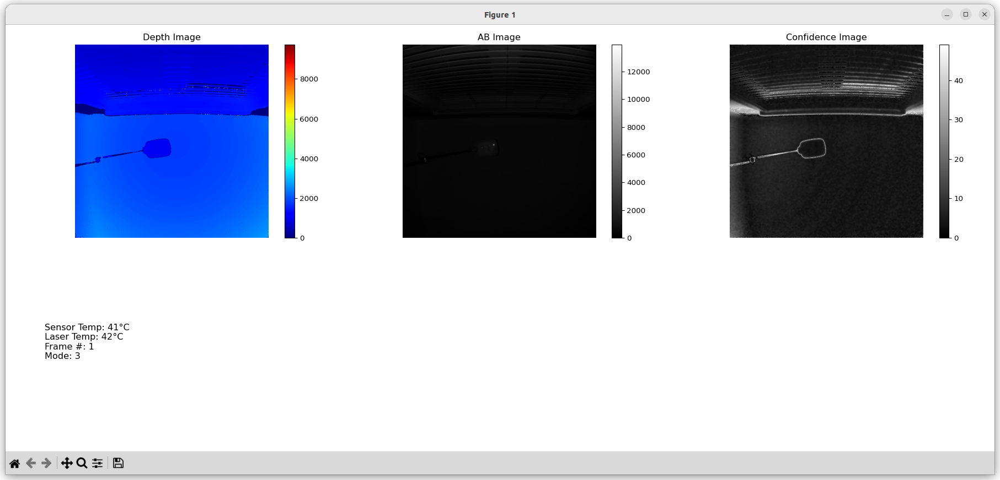
Example: streaming (Python)
streaming (Python)
This tool uses Pygame to show streaming frames from the device in real-time.
Command Line Interface
(aditofpython_env) ~/ADI/Robotics/Camera/ADCAM/0.2.0-a.1/eval/Python$ python depth-image-animation-pygame.py
pygame 2.6.1 (SDL 2.28.4, Python 3.10.12)
Hello from the pygame community. https://www.pygame.org/contribute.html
depth-image-animation-pygame.py usage:
Target: depth-image-animation-pygame.py <mode number>
Network connection: depth-image-animation-pygame.py <mode number> <ip>
For example:
python depth-image-animation-pygame.py 0 192.168.56.1Example Usage
(aditofpython_env) ~/ADI/Robotics/Camera/ADCAM/0.2.0-a.1/eval/Python$ python depth-image-animation-pygame.py 3
pygame 2.6.1 (SDL 2.28.4, Python 3.10.12)
Hello from the pygame community. https://www.pygame.org/contribute.html
SDK version: 7.0.0 a-1 | branch: main | commit: 91b46285
Looking for camera on Target.
I20260225 13:52:27.214903 267320 platform_impl.cpp:53] Initializing platform: NVIDIA Jetson Orin Nano
I20260225 13:52:27.215024 267320 sensor_enumerator.cpp:51] Initialized platform: NVIDIA Jetson Orin Nano (aarch64)
I20260225 13:52:27.218850 267320 platform_impl.cpp:338] Found ADSD3500: video=/dev/video0 subdev=/dev/v4l-subdev1
I20260225 13:52:27.218910 267320 sensor_enumerator.cpp:88] Found 1 ToF sensor(s)
I20260225 13:52:27.218961 267320 platform_impl.cpp:53] Initializing platform: NVIDIA Jetson Orin Nano
I20260225 13:52:27.218998 267320 buffer_processor.cpp:110] BufferProcessor initialized
I20260225 13:52:27.219053 267320 sensor_enumerator.cpp:133] Created ADSD3500 sensor at /dev/video0
I20260225 13:52:27.219121 267320 camera_itof.cpp:115] Sensor name = adsd3500
system.getCameraList() Status.Ok
I20260225 13:52:27.219242 267320 camera_itof.cpp:165] Initializing camera: Online
I20260225 13:52:27.219271 267320 adsd3500_sensor.cpp:336] Opening device
I20260225 13:52:27.219286 267320 adsd3500_sensor.cpp:354] Looking for the following cards:
I20260225 13:52:27.219297 267320 adsd3500_sensor.cpp:356] vi-output, adsd3500
I20260225 13:52:27.219308 267320 adsd3500_sensor.cpp:418] device: /dev/video0 subdevice: /dev/v4l-subdev1
I20260225 13:52:27.219361 267320 adsd3500_sensor.cpp:513] ADSD3500 initialization attempt 1 of 3
I20260225 13:52:27.219377 267320 platform_impl.cpp:550] Resetting sensor via GPIO
W20260225 13:52:27.223001 267320 adsd3500_sensor.cpp:189] xioctl failed: fd=5 request=0xc0205648 errno=5 (Input/output error) after 2 attempts
W20260225 13:52:27.223037 267320 adsd3500_sensor.cpp:1423] Could not set control: 0x9819d1 with command: 0x20. Reason: Input/output error(5)
E20260225 13:52:27.223052 267320 adsd3500_sensor.cpp:2672] Failed to read status register!
I20260225 13:52:27.324308 267320 platform_impl.cpp:648] Waiting for sensor to reset
I20260225 13:52:27.324361 267320 platform_impl.cpp:651] .
^FI20260225 13:52:28.324681 267320 platform_impl.cpp:651] .
streamI20260225 13:52:29.330079 267320 platform_impl.cpp:655] Waited: 2 seconds
I20260225 13:52:29.330190 267320 platform_impl.cpp:667] Sensor reset complete
I20260225 13:52:29.443282 267320 adsd3500_sensor.cpp:550] ADSD3500 is ready to communicate with after 1 attempt(s)
I20260225 13:52:29.445325 267320 adsd3500_sensor.cpp:2407] CCB master is supported. Reading mode details from nvm.
I20260225 13:52:29.463962 267320 camera_itof.cpp:263] Current adsd3500 firmware version is: 7.0.2.0
I20260225 13:52:29.464020 267320 camera_itof.cpp:265] Current adsd3500 firmware git hash is: d340af8bfad4f13980f4d9a9e166ee20f2358fd5
W20260225 13:52:29.464239 267320 camera_itof.cpp:286] fsyncMode is not being set by SDK.
I20260225 13:52:29.464278 267320 camera_itof.cpp:298] Using platform MIPI output speed: 1
I20260225 13:52:29.464306 267320 camera_itof.cpp:303] Using platform deskew setting: 1
I20260225 13:52:29.464557 267320 camera_itof.cpp:324] MIPI output speed set to 1
I20260225 13:52:29.464796 267320 camera_itof.cpp:334] Deskew enabled at stream on
W20260225 13:52:29.464837 267320 camera_itof.cpp:345] enableTempCompenstation is not being set by SDK.
W20260225 13:52:29.464865 267320 camera_itof.cpp:355] enableEdgeConfidence is not being set by SDK.
I20260225 13:52:29.471118 267320 camera_itof.cpp:361] Module serial number: 026AM313018F0N6JAL
I20260225 13:52:29.471145 267320 camera_itof.cpp:369] Camera initialized
camera1.initialize() Status.Ok
camera1.getAvailableModes() Status.Ok
[0, 1, 2, 3]
camera1.getDetails() Status.Ok
camera1 details: id: /dev/video0 connection: ConnectionType.OnTarget
I20260225 13:52:29.471555 267320 adsd3500_sensor.cpp:336] Opening device
I20260225 13:52:29.471584 267320 adsd3500_sensor.cpp:354] Looking for the following cards:
I20260225 13:52:29.471598 267320 adsd3500_sensor.cpp:356] vi-output, adsd3500
I20260225 13:52:29.471609 267320 adsd3500_sensor.cpp:418] device: /dev/video0 subdevice: /dev/v4l-subdev1
I20260225 13:52:31.676008 267320 buffer_processor.cpp:260] setVideoProperties: Allocating 3 raw frame buffers, each of size 1313280 bytes (total: 3.75732 MB)
I20260225 13:52:31.676311 267320 buffer_processor.cpp:279] setVideoProperties: Allocating 3 ToFi buffers, each of size 2097152 bytes (total: 6 MB)
I20260225 13:52:31.878289 267320 camera_itof.cpp:3315] Camera FPS set from parameter list at: 40
W20260225 13:52:31.878383 267320 camera_itof.cpp:3848] vcselDelay was not found in parameter list, not setting.
W20260225 13:52:31.878870 267320 camera_itof.cpp:3911] enablePhaseInvalidation was not found in parameter list, not setting.
I20260225 13:52:31.878928 267320 camera_itof.cpp:638] Using the following configuration parameters for mode 3
I20260225 13:52:31.878946 267320 camera_itof.cpp:641] abThreshMin : 20
I20260225 13:52:31.878958 267320 camera_itof.cpp:641] bitsInAB : 16
I20260225 13:52:31.878969 267320 camera_itof.cpp:641] bitsInConf : 8
I20260225 13:52:31.878979 267320 camera_itof.cpp:641] bitsInPhaseOrDepth : 16
I20260225 13:52:31.878989 267320 camera_itof.cpp:641] confThresh : 25
I20260225 13:52:31.878999 267320 camera_itof.cpp:641] depthComputeIspEnable : 1
I20260225 13:52:31.879009 267320 camera_itof.cpp:641] fps : 40
I20260225 13:52:31.879018 267320 camera_itof.cpp:641] headerSize : 128
I20260225 13:52:31.879028 267320 camera_itof.cpp:641] inputFormat : raw8
I20260225 13:52:31.879038 267320 camera_itof.cpp:641] interleavingEnable : 1
I20260225 13:52:31.879047 267320 camera_itof.cpp:641] jblfABThreshold : 10
I20260225 13:52:31.879057 267320 camera_itof.cpp:641] jblfApplyFlag : 1
I20260225 13:52:31.879068 267320 camera_itof.cpp:641] jblfExponentialTerm : 5
I20260225 13:52:31.879078 267320 camera_itof.cpp:641] jblfGaussianSigma : 10
I20260225 13:52:31.879087 267320 camera_itof.cpp:641] jblfMaxEdge : 12
I20260225 13:52:31.879097 267320 camera_itof.cpp:641] jblfWindowSize : 5
I20260225 13:52:31.879106 267320 camera_itof.cpp:641] partialDepthEnable : 0
I20260225 13:52:31.879116 267320 camera_itof.cpp:641] phaseInvalid : 0
I20260225 13:52:31.879125 267320 camera_itof.cpp:641] radialThreshMax : 10000
I20260225 13:52:31.879138 267320 camera_itof.cpp:641] radialThreshMin : 100
I20260225 13:52:31.879149 267320 camera_itof.cpp:641] xyzEnable : 1
I20260225 13:52:31.879284 267320 camera_itof.cpp:651] Metadata in AB is enabled and it is stored in the first 128 bytes.
I20260225 13:52:32.090634 267320 camera_itof.cpp:749] Using closed source depth compute library.
camera1.setMode() Status.Ok
I20260225 13:52:32.197406 267320 adsd3500_sensor.cpp:638] Starting device 0
I20260225 13:52:32.217121 267320 buffer_processor.cpp:1042] startThreads: Starting Threads..
camera1.start() Status.Ok
I20260225 13:52:32.652446 267320 camera_itof.cpp:1251] Dropped first frame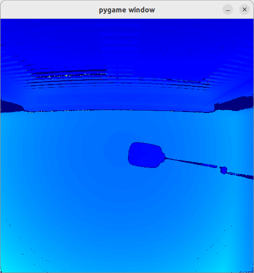
We have provided examples and tools in C++ that should how to use the SDK.
first_frame (C++)
first_frame (C++)
Command Line Interface
(aditofpython_env) ~/ADI/Robotics/Camera/ADCAM/0.2.0-a.1/eval/C++/first-frame$ ./first-frame --m 3
I20260224 13:41:36.806744 14638 main.cpp:147] ADCAM version: 0.2.0 | SDK version: 7.0.0 a-1 | branch: main | commit: 07dc4be6
I20260224 13:41:36.806935 14638 platform_impl.cpp:53] Initializing platform: NVIDIA Jetson Orin Nano
I20260224 13:41:36.806967 14638 sensor_enumerator.cpp:51] Initialized platform: NVIDIA Jetson Orin Nano (aarch64)
I20260224 13:41:36.811609 14638 platform_impl.cpp:338] Found ADSD3500: video=/dev/video0 subdev=/dev/v4l-subdev1
I20260224 13:41:36.811664 14638 sensor_enumerator.cpp:88] Found 1 ToF sensor(s)
I20260224 13:41:36.811767 14638 platform_impl.cpp:53] Initializing platform: NVIDIA Jetson Orin Nano
I20260224 13:41:36.811833 14638 buffer_processor.cpp:110] BufferProcessor initialized
I20260224 13:41:36.811895 14638 sensor_enumerator.cpp:133] Created ADSD3500 sensor at /dev/video0
I20260224 13:41:36.811981 14638 camera_itof.cpp:115] Sensor name = adsd3500
I20260224 13:41:36.812015 14638 camera_itof.cpp:165] Initializing camera: Online
I20260224 13:41:36.812038 14638 adsd3500_sensor.cpp:336] Opening device
I20260224 13:41:36.812055 14638 adsd3500_sensor.cpp:354] Looking for the following cards:
I20260224 13:41:36.812069 14638 adsd3500_sensor.cpp:356] vi-output, adsd3500
I20260224 13:41:36.812086 14638 adsd3500_sensor.cpp:418] device: /dev/video0 subdevice: /dev/v4l-subdev1
I20260224 13:41:36.812148 14638 adsd3500_sensor.cpp:513] ADSD3500 initialization attempt 1 of 3
I20260224 13:41:36.812170 14638 platform_impl.cpp:550] Resetting sensor via GPIO
W20260224 13:41:36.816450 14638 adsd3500_sensor.cpp:189] xioctl failed: fd=5 request=0xc0205648 errno=5 (Input/output error) after 2 attempts
W20260224 13:41:36.816498 14638 adsd3500_sensor.cpp:1423] Could not set control: 0x9819d1 with command: 0x20. Reason: Input/output error(5)
E20260224 13:41:36.816524 14638 adsd3500_sensor.cpp:2672] Failed to read status register!
I20260224 13:41:36.918164 14638 platform_impl.cpp:648] Waiting for sensor to reset
I20260224 13:41:36.918225 14638 platform_impl.cpp:651] .
I20260224 13:41:37.918337 14638 platform_impl.cpp:651] .
I20260224 13:41:38.183513 14638 main.cpp:187] Running the callback for which the status of ADSD3500 has been forwarded. ADSD3500 status = Adsd3500Status::OK
I20260224 13:41:38.186005 14638 main.cpp:187] Running the callback for which the status of ADSD3500 has been forwarded. ADSD3500 status = Adsd3500Status::OK
I20260224 13:41:38.923789 14638 platform_impl.cpp:655] Waited: 2 seconds
I20260224 13:41:38.923892 14638 platform_impl.cpp:667] Sensor reset complete
I20260224 13:41:39.036304 14638 adsd3500_sensor.cpp:550] ADSD3500 is ready to communicate with after 1 attempt(s)
I20260224 13:41:39.038281 14638 adsd3500_sensor.cpp:2407] CCB master is supported. Reading mode details from nvm.
I20260224 13:41:39.056962 14638 camera_itof.cpp:263] Current adsd3500 firmware version is: 7.0.2.0
I20260224 13:41:39.057015 14638 camera_itof.cpp:265] Current adsd3500 firmware git hash is: d340af8bfad4f13980f4d9a9e166ee20f2358fd5
W20260224 13:41:39.057245 14638 camera_itof.cpp:286] fsyncMode is not being set by SDK.
I20260224 13:41:39.057286 14638 camera_itof.cpp:298] Using platform MIPI output speed: 1
I20260224 13:41:39.057316 14638 camera_itof.cpp:303] Using platform deskew setting: 1
I20260224 13:41:39.057537 14638 camera_itof.cpp:324] MIPI output speed set to 1
I20260224 13:41:39.057763 14638 camera_itof.cpp:334] Deskew enabled at stream on
W20260224 13:41:39.057798 14638 camera_itof.cpp:345] enableTempCompenstation is not being set by SDK.
W20260224 13:41:39.057824 14638 camera_itof.cpp:355] enableEdgeConfidence is not being set by SDK.
I20260224 13:41:39.064188 14638 camera_itof.cpp:361] Module serial number: 026AM313018F0N6JAL
I20260224 13:41:39.064220 14638 camera_itof.cpp:369] Camera initialized
I20260224 13:41:39.064351 14638 adsd3500_sensor.cpp:336] Opening device
I20260224 13:41:39.064373 14638 adsd3500_sensor.cpp:354] Looking for the following cards:
I20260224 13:41:39.064393 14638 adsd3500_sensor.cpp:356] vi-output, adsd3500
I20260224 13:41:39.064405 14638 adsd3500_sensor.cpp:418] device: /dev/video0 subdevice: /dev/v4l-subdev1
I20260224 13:41:41.268605 14638 buffer_processor.cpp:260] setVideoProperties: Allocating 3 raw frame buffers, each of size 1313280 bytes (total: 3.75732 MB)
I20260224 13:41:41.268883 14638 buffer_processor.cpp:279] setVideoProperties: Allocating 3 ToFi buffers, each of size 2097152 bytes (total: 6 MB)
I20260224 13:41:41.470668 14638 camera_itof.cpp:3315] Camera FPS set from parameter list at: 40
W20260224 13:41:41.470706 14638 camera_itof.cpp:3848] vcselDelay was not found in parameter list, not setting.
W20260224 13:41:41.471186 14638 camera_itof.cpp:3911] enablePhaseInvalidation was not found in parameter list, not setting.
I20260224 13:41:41.471232 14638 camera_itof.cpp:638] Using the following configuration parameters for mode 3
I20260224 13:41:41.471246 14638 camera_itof.cpp:641] abThreshMin : 20
I20260224 13:41:41.471257 14638 camera_itof.cpp:641] bitsInAB : 16
I20260224 13:41:41.471267 14638 camera_itof.cpp:641] bitsInConf : 8
I20260224 13:41:41.471276 14638 camera_itof.cpp:641] bitsInPhaseOrDepth : 16
I20260224 13:41:41.471285 14638 camera_itof.cpp:641] confThresh : 25
I20260224 13:41:41.471294 14638 camera_itof.cpp:641] depthComputeIspEnable : 1
I20260224 13:41:41.471303 14638 camera_itof.cpp:641] fps : 40
I20260224 13:41:41.471312 14638 camera_itof.cpp:641] headerSize : 128
I20260224 13:41:41.471320 14638 camera_itof.cpp:641] inputFormat : raw8
I20260224 13:41:41.471329 14638 camera_itof.cpp:641] interleavingEnable : 1
I20260224 13:41:41.471338 14638 camera_itof.cpp:641] jblfABThreshold : 10
I20260224 13:41:41.471347 14638 camera_itof.cpp:641] jblfApplyFlag : 1
I20260224 13:41:41.471356 14638 camera_itof.cpp:641] jblfExponentialTerm : 5
I20260224 13:41:41.471365 14638 camera_itof.cpp:641] jblfGaussianSigma : 10
I20260224 13:41:41.471374 14638 camera_itof.cpp:641] jblfMaxEdge : 12
I20260224 13:41:41.471383 14638 camera_itof.cpp:641] jblfWindowSize : 5
I20260224 13:41:41.471391 14638 camera_itof.cpp:641] partialDepthEnable : 0
I20260224 13:41:41.471400 14638 camera_itof.cpp:641] phaseInvalid : 0
I20260224 13:41:41.471409 14638 camera_itof.cpp:641] radialThreshMax : 10000
I20260224 13:41:41.471419 14638 camera_itof.cpp:641] radialThreshMin : 100
I20260224 13:41:41.471428 14638 camera_itof.cpp:641] xyzEnable : 1
I20260224 13:41:41.471561 14638 camera_itof.cpp:651] Metadata in AB is enabled and it is stored in the first 128 bytes.
I20260224 13:41:41.684228 14638 camera_itof.cpp:749] Using closed source depth compute library.
I20260224 13:41:41.791301 14638 adsd3500_sensor.cpp:638] Starting device 0
I20260224 13:41:41.815948 14638 buffer_processor.cpp:1042] startThreads: Starting Threads..
I20260224 13:41:41.844292 14638 camera_itof.cpp:1251] Dropped first frame
I20260224 13:41:41.860961 14638 main.cpp:244] succesfully requested frame!
I20260224 13:41:44.085056 14638 buffer_processor.cpp:1112] stopThreads: Threads stopped successfully. Queue sizes - v4l2_input: 3, capture_to_process: 0, tofi_io: 3, process_done: 0
I20260224 13:41:44.085195 14638 adsd3500_sensor.cpp:691] Stopping device
I20260224 13:41:44.089426 14638 adsd3500_sensor.cpp:1917] Waiting for interrupt.
I20260224 13:41:44.089492 14638 adsd3500_sensor.cpp:1922] .
I20260224 13:41:44.100380 14638 main.cpp:187] Running the callback for which the status of ADSD3500 has been forwarded. ADSD3500 status = Adsd3500Status::IMAGER_STREAM_OFF
I20260224 13:41:44.112173 14638 adsd3500_sensor.cpp:1927] Waited: 20 ms.
I20260224 13:41:44.112217 14638 adsd3500_sensor.cpp:1934] Got the Interrupt from ADSD3500
I20260224 13:41:44.112249 14638 camera_itof.cpp:3632] No chip/imager errors detected.
I20260224 13:41:44.112273 14638 main.cpp:264] Chip status error code: 41
I20260224 13:41:44.112297 14638 main.cpp:265] Imager status error code: 0
I20260224 13:41:44.112330 14638 main.cpp:274] Sensor Temperature: 40
I20260224 13:41:44.112354 14638 main.cpp:275] Laser Temperature: 42
I20260224 13:41:44.112375 14638 main.cpp:276] Frame Number: 1
I20260224 13:41:44.112398 14638 main.cpp:277] Mode: 3
I20260224 13:41:44.114084 14638 buffer_processor.cpp:133] freeComputeLibraryTwo files should have been generated: * out_ab_mode_3.bin
Note, for visualzation, it is assumed that the Python environment is still active.
To visualize the AB output:
(aditofpython_env) ~/ADI/Robotics/Camera/ADCAM/0.2.0-a.1/eval/C++/first-frame$ python visualization/visualize_ab.py out_ab_mode_3.bin 512 512
Input file is: out_ab_mode_3.bin
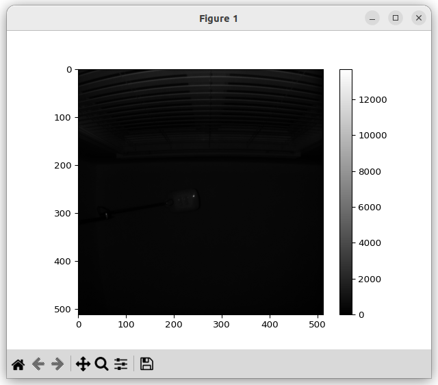
To visualize the depth output:
(aditofpython_env) ~/ADI/Robotics/Camera/ADCAM/0.2.0-a.1/eval/C++/first-frame$ python visualization/visualize_depth.py out_depth_mode_3.bin 512 512
Input file is: out_depth_mode_3.bin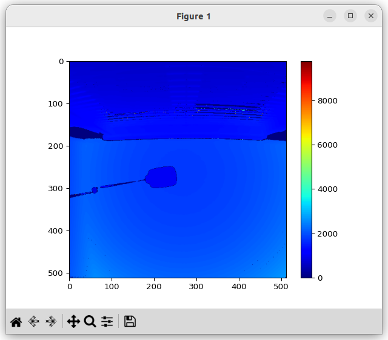
First Frame C++ Experiments
To make it easier for the user to experiment with the C++ code with have added main.cpp from first frame and Makefile.eval.
The output first-frame.user is a user built version of first-frame .
$ make -f Makefile.eval
$ ls first-frame*
first-frame first-frame.user
data_collect (C++)
data_collect (C++)
data_collect is use save a stream of frames to the file system of the host computer.
Command Line Interface
(aditofpython_env) ~/ADI/Robotics/Camera/ADCAM/0.2.0-a.1/eval/C++/data_collect$ ./data_collect
Data Collect.
Usage:
data_collect
data_collect [--f <folder>] [--fps <frame rate>] [--n <ncapture>] [--m <mode>] [--ccb FILE] [--ip <ip>] [--fw <firmware>] [--ic <imager-configuration>] [-scf <save-configuration-file>] [-lcf <load-configuration-file>]
data_collect (-h | --help)
Options:
-h --help Show this screen.
--f <folder> Output folder (max name 512) [default: ./]
--fps <frame rate> Frame rate in frames per second [default: 10]
--n <ncapture> Capture frame num. [default: 1]
--m <mode> Mode to capture data in. [default: 0]
--ccb <FILE> The path to store CCB content
--ip <ip> Camera IP
--fw <firmware> Adsd3500 fw file
--ic <imager-configuration> Select imager configuration: standard, standard-raw,
custom, custom-raw. By default is standard.
--scf <save-configuration-file> Save current configuration to json file
--lcf <load-configuration-file> Load configuration from json file
Note: --m argument supports index (0, 1, etc.)
Valid mode (--m) options are:
0: short-range native
1: long-range native
2: short-range Qnative
3: long-range Qnative
4: pcm-native
5: long-range mixed
6: short-range mixedExample 1: Basic Usage
–f output : Place captured data into the folder output .–m 1 : Use mode 1.–n 100 : Capture 100 frames.
data_collect –f output –m 1 –n 100
(aditofpython_env) analog@analog-desktop:~/ADI/Robotics/Camera/ADCAM/0.2.0-a.1/eval/C++/data_collect$ ./data_collect --f output --m 1 --n 100
I20260225 12:20:07.078713 261726 main.cpp:192] ADCAM version: 0.2.0 | SDK version: 7.0.0 a-1 | branch: main | commit: 91b46285
I20260225 12:20:07.078938 261726 main.cpp:260] Output folder: output
I20260225 12:20:07.078966 261726 main.cpp:261] Mode: 1
I20260225 12:20:07.078982 261726 main.cpp:262] Number of frames: 100
I20260225 12:20:07.078998 261726 main.cpp:263] Json file:
I20260225 12:20:07.079012 261726 main.cpp:264] Configuration is: standard
I20260225 12:20:07.079041 261726 platform_impl.cpp:53] Initializing platform: NVIDIA Jetson Orin Nano
I20260225 12:20:07.079066 261726 sensor_enumerator.cpp:51] Initialized platform: NVIDIA Jetson Orin Nano (aarch64)
I20260225 12:20:07.086622 261726 platform_impl.cpp:338] Found ADSD3500: video=/dev/video0 subdev=/dev/v4l-subdev1
I20260225 12:20:07.086680 261726 sensor_enumerator.cpp:88] Found 1 ToF sensor(s)
I20260225 12:20:07.086775 261726 platform_impl.cpp:53] Initializing platform: NVIDIA Jetson Orin Nano
I20260225 12:20:07.086867 261726 buffer_processor.cpp:110] BufferProcessor initialized
I20260225 12:20:07.086967 261726 sensor_enumerator.cpp:133] Created ADSD3500 sensor at /dev/video0
I20260225 12:20:07.087084 261726 camera_itof.cpp:115] Sensor name = adsd3500
I20260225 12:20:07.087126 261726 camera_itof.cpp:165] Initializing camera: Online
I20260225 12:20:07.087153 261726 adsd3500_sensor.cpp:336] Opening device
I20260225 12:20:07.087173 261726 adsd3500_sensor.cpp:354] Looking for the following cards:
I20260225 12:20:07.087189 261726 adsd3500_sensor.cpp:356] vi-output, adsd3500
I20260225 12:20:07.087208 261726 adsd3500_sensor.cpp:418] device: /dev/video0 subdevice: /dev/v4l-subdev1
I20260225 12:20:07.087279 261726 adsd3500_sensor.cpp:513] ADSD3500 initialization attempt 1 of 3
I20260225 12:20:07.087309 261726 platform_impl.cpp:550] Resetting sensor via GPIO
W20260225 12:20:07.092062 261726 adsd3500_sensor.cpp:189] xioctl failed: fd=5 request=0xc0205648 errno=5 (Input/output error) after 2 attempts
W20260225 12:20:07.092101 261726 adsd3500_sensor.cpp:1423] Could not set control: 0x9819d1 with command: 0x20. Reason: Input/output error(5)
E20260225 12:20:07.092123 261726 adsd3500_sensor.cpp:2672] Failed to read status register!
I20260225 12:20:07.193933 261726 platform_impl.cpp:648] Waiting for sensor to reset
I20260225 12:20:07.194003 261726 platform_impl.cpp:651] .
I20260225 12:20:08.194328 261726 platform_impl.cpp:651] .
I20260225 12:20:09.200017 261726 platform_impl.cpp:655] Waited: 2 seconds
I20260225 12:20:09.200130 261726 platform_impl.cpp:667] Sensor reset complete
I20260225 12:20:09.312163 261726 adsd3500_sensor.cpp:550] ADSD3500 is ready to communicate with after 1 attempt(s)
I20260225 12:20:09.314311 261726 adsd3500_sensor.cpp:2407] CCB master is supported. Reading mode details from nvm.
I20260225 12:20:09.333011 261726 camera_itof.cpp:263] Current adsd3500 firmware version is: 7.0.2.0
I20260225 12:20:09.333072 261726 camera_itof.cpp:265] Current adsd3500 firmware git hash is: d340af8bfad4f13980f4d9a9e166ee20f2358fd5
W20260225 12:20:09.333311 261726 camera_itof.cpp:286] fsyncMode is not being set by SDK.
I20260225 12:20:09.333359 261726 camera_itof.cpp:298] Using platform MIPI output speed: 1
I20260225 12:20:09.333395 261726 camera_itof.cpp:303] Using platform deskew setting: 1
I20260225 12:20:09.333624 261726 camera_itof.cpp:324] MIPI output speed set to 1
I20260225 12:20:09.333849 261726 camera_itof.cpp:334] Deskew enabled at stream on
W20260225 12:20:09.333884 261726 camera_itof.cpp:345] enableTempCompenstation is not being set by SDK.
W20260225 12:20:09.333910 261726 camera_itof.cpp:355] enableEdgeConfidence is not being set by SDK.
I20260225 12:20:09.340166 261726 camera_itof.cpp:361] Module serial number: 026AM313018F0N6JAL
I20260225 12:20:09.340186 261726 camera_itof.cpp:369] Camera initialized
I20260225 12:20:09.340202 261726 adsd3500_sensor.cpp:2742] Using sensor configuration: standard
I20260225 12:20:09.340217 261726 main.cpp:305] Configure camera with standard
I20260225 12:20:09.340351 261726 adsd3500_sensor.cpp:336] Opening device
I20260225 12:20:09.340374 261726 adsd3500_sensor.cpp:354] Looking for the following cards:
I20260225 12:20:09.340387 261726 adsd3500_sensor.cpp:356] vi-output, adsd3500
I20260225 12:20:09.340399 261726 adsd3500_sensor.cpp:418] device: /dev/video0 subdevice: /dev/v4l-subdev1
I20260225 12:20:11.547629 261726 buffer_processor.cpp:260] setVideoProperties: Allocating 3 raw frame buffers, each of size 4195328 bytes (total: 12.0029 MB)
I20260225 12:20:11.556618 261726 buffer_processor.cpp:279] setVideoProperties: Allocating 3 ToFi buffers, each of size 4194304 bytes (total: 12 MB)
I20260225 12:20:11.758290 261726 camera_itof.cpp:3315] Camera FPS set from parameter list at: 10
W20260225 12:20:11.758370 261726 camera_itof.cpp:3848] vcselDelay was not found in parameter list, not setting.
W20260225 12:20:11.758878 261726 camera_itof.cpp:3911] enablePhaseInvalidation was not found in parameter list, not setting.
I20260225 12:20:11.758930 261726 camera_itof.cpp:638] Using the following configuration parameters for mode 1
I20260225 12:20:11.758946 261726 camera_itof.cpp:641] abThreshMin : 20
I20260225 12:20:11.758959 261726 camera_itof.cpp:641] bitsInAB : 16
I20260225 12:20:11.758970 261726 camera_itof.cpp:641] bitsInConf : 0
I20260225 12:20:11.758981 261726 camera_itof.cpp:641] bitsInPhaseOrDepth : 16
I20260225 12:20:11.758992 261726 camera_itof.cpp:641] confThresh : 25
I20260225 12:20:11.759003 261726 camera_itof.cpp:641] depthComputeIspEnable : 1
I20260225 12:20:11.759014 261726 camera_itof.cpp:641] fps : 10
I20260225 12:20:11.759025 261726 camera_itof.cpp:641] headerSize : 128
I20260225 12:20:11.759038 261726 camera_itof.cpp:641] inputFormat : mipiRaw12_8
I20260225 12:20:11.759049 261726 camera_itof.cpp:641] interleavingEnable : 0
I20260225 12:20:11.759059 261726 camera_itof.cpp:641] jblfABThreshold : 10
I20260225 12:20:11.759070 261726 camera_itof.cpp:641] jblfApplyFlag : 1
I20260225 12:20:11.759080 261726 camera_itof.cpp:641] jblfExponentialTerm : 5
I20260225 12:20:11.759092 261726 camera_itof.cpp:641] jblfGaussianSigma : 10
I20260225 12:20:11.759102 261726 camera_itof.cpp:641] jblfMaxEdge : 12
I20260225 12:20:11.759113 261726 camera_itof.cpp:641] jblfWindowSize : 5
I20260225 12:20:11.759124 261726 camera_itof.cpp:641] partialDepthEnable : 1
I20260225 12:20:11.759135 261726 camera_itof.cpp:641] phaseInvalid : 0
I20260225 12:20:11.759146 261726 camera_itof.cpp:641] radialThreshMax : 10000
I20260225 12:20:11.759157 261726 camera_itof.cpp:641] radialThreshMin : 100
I20260225 12:20:11.759168 261726 camera_itof.cpp:641] xyzEnable : 1
I20260225 12:20:11.759300 261726 camera_itof.cpp:651] Metadata in AB is enabled and it is stored in the first 128 bytes.
I20260225 12:20:12.466721 261726 camera_itof.cpp:749] Using closed source depth compute library.
I20260225 12:20:12.891054 261726 camera_itof.cpp:3315] Camera FPS set from parameter list at: 10
I20260225 12:20:12.891432 261726 adsd3500_sensor.cpp:638] Starting device 0
I20260225 12:20:12.912085 261726 buffer_processor.cpp:1042] startThreads: Starting Threads..
I20260225 12:20:12.964059 261726 camera_itof.cpp:1251] Dropped first frame
I20260225 12:20:13.060720 261726 main.cpp:408] Starting capture of 100 frames.
I20260225 12:20:13.060856 261726 main.cpp:409] Expected capture time (ms): 10000
I20260225 12:20:13.060884 261726 main.cpp:410] Maximum allowed capture time (ms): 600000
I20260225 12:20:13.060900 261726 main.cpp:411] FPS: 10
I20260225 12:20:13.060917 261726 camera_itof.cpp:978] [RECORDING] Enable flags: depth=1 ab=1 conf=0 xyz=1
I20260225 12:20:13.060937 261726 camera_itof.cpp:981] [RECORDING] Original frameContent has 4 items
I20260225 12:20:13.060952 261726 camera_itof.cpp:989] [RECORDING] Adding to header: depth
I20260225 12:20:13.060967 261726 camera_itof.cpp:989] [RECORDING] Adding to header: ab
I20260225 12:20:13.060980 261726 camera_itof.cpp:989] [RECORDING] Adding to header: xyz
I20260225 12:20:13.060993 261726 camera_itof.cpp:989] [RECORDING] Adding to header: metadata
I20260225 12:20:13.061007 261726 camera_itof.cpp:994] [RECORDING] Total frame types in header: 4
I20260225 12:20:13.061021 261726 camera_itof.cpp:1015] [RECORDING] Building fDataDetails from frameContent...
I20260225 12:20:13.061034 261726 camera_itof.cpp:1026] [RECORDING] Skipping raw from fDataDetails (not supported)
I20260225 12:20:13.061048 261726 camera_itof.cpp:1031] [RECORDING] Adding to fDataDetails: depth
I20260225 12:20:13.061066 261726 camera_itof.cpp:1031] [RECORDING] Adding to fDataDetails: ab
I20260225 12:20:13.061080 261726 camera_itof.cpp:1031] [RECORDING] Adding to fDataDetails: xyz
I20260225 12:20:13.061094 261726 camera_itof.cpp:1031] [RECORDING] Adding to fDataDetails: metadata
I20260225 12:20:13.061108 261726 camera_itof.cpp:1071] [RECORDING] Final fDataDetails count: 4
I20260225 12:20:13.061121 261726 camera_itof.cpp:1073] [RECORDING] Writing header to file: output
I20260225 12:20:13.061136 261726 adsd3500_sensor.cpp:3082] startRecording: Start recording
I20260225 12:20:23.076265 261726 main.cpp:450] Capture complete. Frames captured: 100
I20260225 12:20:23.076534 261726 buffer_processor.cpp:1193] Recording stopped. Total frames saved: 100
I20260225 12:20:23.076589 261726 main.cpp:459] Measured FPS: 10.0857
I20260225 12:20:25.353070 261726 buffer_processor.cpp:1112] stopThreads: Threads stopped successfully. Queue sizes - v4l2_input: 3, capture_to_process: 0, tofi_io: 3, process_done: 0
I20260225 12:20:25.353194 261726 adsd3500_sensor.cpp:691] Stopping device
I20260225 12:20:25.358704 261726 adsd3500_sensor.cpp:1917] Waiting for interrupt.
I20260225 12:20:25.358803 261726 adsd3500_sensor.cpp:1922] .
I20260225 12:20:25.381669 261726 adsd3500_sensor.cpp:1927] Waited: 20 ms.
I20260225 12:20:25.381746 261726 adsd3500_sensor.cpp:1934] Got the Interrupt from ADSD3500
I20260225 12:20:25.386176 261726 buffer_processor.cpp:133] freeComputeLibrary
(aditofpython_env) :~/ADI/Robotics/Camera/ADCAM/0.2.0-a.1/eval/C++/data_collect$ ls output/recordings/
aditof_20260225_172013_a4ce5cf9.adcam
Example 2: Saving Configuration Data to JSON
–scf saved_cfg.json : Save the device configuration file to saved_cfg.json .
data_collect –scf saved_cfg.json
(aditofpython_env) ~/ADI/Robotics/Camera/ADCAM/0.2.0-a.1/eval/C++/data_collect$ ./data_collect --scf saved_cfg.json
I20260225 12:23:09.037848 261797 main.cpp:192] ADCAM version: 0.2.0 | SDK version: 7.0.0 a-1 | branch: main | commit: 91b46285
I20260225 12:23:09.038020 261797 main.cpp:260] Output folder: .
I20260225 12:23:09.038038 261797 main.cpp:261] Mode: 0
I20260225 12:23:09.038049 261797 main.cpp:262] Number of frames: 1
I20260225 12:23:09.038061 261797 main.cpp:263] Json file:
I20260225 12:23:09.038070 261797 main.cpp:264] Configuration is: standard
I20260225 12:23:09.038091 261797 platform_impl.cpp:53] Initializing platform: NVIDIA Jetson Orin Nano
I20260225 12:23:09.038111 261797 sensor_enumerator.cpp:51] Initialized platform: NVIDIA Jetson Orin Nano (aarch64)
I20260225 12:23:09.041471 261797 platform_impl.cpp:338] Found ADSD3500: video=/dev/video0 subdev=/dev/v4l-subdev1
I20260225 12:23:09.041514 261797 sensor_enumerator.cpp:88] Found 1 ToF sensor(s)
I20260225 12:23:09.041588 261797 platform_impl.cpp:53] Initializing platform: NVIDIA Jetson Orin Nano
I20260225 12:23:09.041635 261797 buffer_processor.cpp:110] BufferProcessor initialized
I20260225 12:23:09.041693 261797 sensor_enumerator.cpp:133] Created ADSD3500 sensor at /dev/video0
I20260225 12:23:09.041756 261797 camera_itof.cpp:115] Sensor name = adsd3500
I20260225 12:23:09.041777 261797 camera_itof.cpp:165] Initializing camera: Online
I20260225 12:23:09.041796 261797 adsd3500_sensor.cpp:336] Opening device
I20260225 12:23:09.041811 261797 adsd3500_sensor.cpp:354] Looking for the following cards:
I20260225 12:23:09.041821 261797 adsd3500_sensor.cpp:356] vi-output, adsd3500
I20260225 12:23:09.041836 261797 adsd3500_sensor.cpp:418] device: /dev/video0 subdevice: /dev/v4l-subdev1
I20260225 12:23:09.041883 261797 adsd3500_sensor.cpp:513] ADSD3500 initialization attempt 1 of 3
I20260225 12:23:09.041906 261797 platform_impl.cpp:550] Resetting sensor via GPIO
W20260225 12:23:09.045396 261797 adsd3500_sensor.cpp:189] xioctl failed: fd=5 request=0xc0205648 errno=5 (Input/output error) after 2 attempts
W20260225 12:23:09.045433 261797 adsd3500_sensor.cpp:1423] Could not set control: 0x9819d1 with command: 0x20. Reason: Input/output error(5)
E20260225 12:23:09.045454 261797 adsd3500_sensor.cpp:2672] Failed to read status register!
I20260225 12:23:09.147069 261797 platform_impl.cpp:648] Waiting for sensor to reset
I20260225 12:23:09.147139 261797 platform_impl.cpp:651] .
I20260225 12:23:10.147257 261797 platform_impl.cpp:651] .
I20260225 12:23:11.153105 261797 platform_impl.cpp:655] Waited: 2 seconds
I20260225 12:23:11.153258 261797 platform_impl.cpp:667] Sensor reset complete
I20260225 12:23:11.267811 261797 adsd3500_sensor.cpp:550] ADSD3500 is ready to communicate with after 1 attempt(s)
I20260225 12:23:11.270121 261797 adsd3500_sensor.cpp:2407] CCB master is supported. Reading mode details from nvm.
I20260225 12:23:11.288941 261797 camera_itof.cpp:263] Current adsd3500 firmware version is: 7.0.2.0
I20260225 12:23:11.288978 261797 camera_itof.cpp:265] Current adsd3500 firmware git hash is: d340af8bfad4f13980f4d9a9e166ee20f2358fd5
W20260225 12:23:11.289130 261797 camera_itof.cpp:286] fsyncMode is not being set by SDK.
I20260225 12:23:11.289154 261797 camera_itof.cpp:298] Using platform MIPI output speed: 1
I20260225 12:23:11.289169 261797 camera_itof.cpp:303] Using platform deskew setting: 1
I20260225 12:23:11.289303 261797 camera_itof.cpp:324] MIPI output speed set to 1
I20260225 12:23:11.289439 261797 camera_itof.cpp:334] Deskew enabled at stream on
W20260225 12:23:11.289455 261797 camera_itof.cpp:345] enableTempCompenstation is not being set by SDK.
W20260225 12:23:11.289466 261797 camera_itof.cpp:355] enableEdgeConfidence is not being set by SDK.
I20260225 12:23:11.295577 261797 camera_itof.cpp:361] Module serial number: 026AM313018F0N6JAL
I20260225 12:23:11.295602 261797 camera_itof.cpp:369] Camera initialized
I20260225 12:23:11.295621 261797 adsd3500_sensor.cpp:2742] Using sensor configuration: standard
I20260225 12:23:11.295634 261797 main.cpp:305] Configure camera with standard
I20260225 12:23:11.296258 261797 main.cpp:314] Current configuration info saved to file saved_cfg.json
I20260225 12:23:11.296401 261797 adsd3500_sensor.cpp:336] Opening device
I20260225 12:23:11.296423 261797 adsd3500_sensor.cpp:354] Looking for the following cards:
I20260225 12:23:11.296434 261797 adsd3500_sensor.cpp:356] vi-output, adsd3500
I20260225 12:23:11.296445 261797 adsd3500_sensor.cpp:418] device: /dev/video0 subdevice: /dev/v4l-subdev1
I20260225 12:23:13.504845 261797 buffer_processor.cpp:260] setVideoProperties: Allocating 3 raw frame buffers, each of size 4195328 bytes (total: 12.0029 MB)
I20260225 12:23:13.505182 261797 buffer_processor.cpp:279] setVideoProperties: Allocating 3 ToFi buffers, each of size 4194304 bytes (total: 12 MB)
I20260225 12:23:13.706799 261797 camera_itof.cpp:3315] Camera FPS set from parameter list at: 10
W20260225 12:23:13.706873 261797 camera_itof.cpp:3848] vcselDelay was not found in parameter list, not setting.
W20260225 12:23:13.707374 261797 camera_itof.cpp:3911] enablePhaseInvalidation was not found in parameter list, not setting.
I20260225 12:23:13.707426 261797 camera_itof.cpp:638] Using the following configuration parameters for mode 0
I20260225 12:23:13.707442 261797 camera_itof.cpp:641] abThreshMin : 20
I20260225 12:23:13.707454 261797 camera_itof.cpp:641] bitsInAB : 16
I20260225 12:23:13.707466 261797 camera_itof.cpp:641] bitsInConf : 0
I20260225 12:23:13.707478 261797 camera_itof.cpp:641] bitsInPhaseOrDepth : 16
I20260225 12:23:13.707489 261797 camera_itof.cpp:641] confThresh : 25
I20260225 12:23:13.707500 261797 camera_itof.cpp:641] depthComputeIspEnable : 1
I20260225 12:23:13.707510 261797 camera_itof.cpp:641] fps : 10
I20260225 12:23:13.707520 261797 camera_itof.cpp:641] headerSize : 128
I20260225 12:23:13.707531 261797 camera_itof.cpp:641] inputFormat : mipiRaw12_8
I20260225 12:23:13.707541 261797 camera_itof.cpp:641] interleavingEnable : 0
I20260225 12:23:13.707552 261797 camera_itof.cpp:641] jblfABThreshold : 10
I20260225 12:23:13.707563 261797 camera_itof.cpp:641] jblfApplyFlag : 1
I20260225 12:23:13.707574 261797 camera_itof.cpp:641] jblfExponentialTerm : 5
I20260225 12:23:13.707584 261797 camera_itof.cpp:641] jblfGaussianSigma : 10
I20260225 12:23:13.707595 261797 camera_itof.cpp:641] jblfMaxEdge : 12
I20260225 12:23:13.707606 261797 camera_itof.cpp:641] jblfWindowSize : 5
I20260225 12:23:13.707616 261797 camera_itof.cpp:641] partialDepthEnable : 1
I20260225 12:23:13.707626 261797 camera_itof.cpp:641] phaseInvalid : 0
I20260225 12:23:13.707637 261797 camera_itof.cpp:641] radialThreshMax : 10000
I20260225 12:23:13.707647 261797 camera_itof.cpp:641] radialThreshMin : 100
I20260225 12:23:13.707657 261797 camera_itof.cpp:641] xyzEnable : 1
I20260225 12:23:13.707793 261797 camera_itof.cpp:651] Metadata in AB is enabled and it is stored in the first 128 bytes.
I20260225 12:23:14.414944 261797 camera_itof.cpp:749] Using closed source depth compute library.
I20260225 12:23:14.839728 261797 camera_itof.cpp:3315] Camera FPS set from parameter list at: 10
I20260225 12:23:14.840103 261797 adsd3500_sensor.cpp:638] Starting device 0
I20260225 12:23:14.861346 261797 buffer_processor.cpp:1042] startThreads: Starting Threads..
I20260225 12:23:14.902486 261797 camera_itof.cpp:1251] Dropped first frame
I20260225 12:23:14.998910 261797 main.cpp:408] Starting capture of 1 frames.
I20260225 12:23:14.999002 261797 main.cpp:409] Expected capture time (ms): 100
I20260225 12:23:14.999022 261797 main.cpp:410] Maximum allowed capture time (ms): 600000
I20260225 12:23:14.999034 261797 main.cpp:411] FPS: 10
I20260225 12:23:14.999045 261797 camera_itof.cpp:978] [RECORDING] Enable flags: depth=1 ab=1 conf=0 xyz=1
I20260225 12:23:14.999061 261797 camera_itof.cpp:981] [RECORDING] Original frameContent has 4 items
I20260225 12:23:14.999073 261797 camera_itof.cpp:989] [RECORDING] Adding to header: depth
I20260225 12:23:14.999083 261797 camera_itof.cpp:989] [RECORDING] Adding to header: ab
I20260225 12:23:14.999093 261797 camera_itof.cpp:989] [RECORDING] Adding to header: xyz
I20260225 12:23:14.999103 261797 camera_itof.cpp:989] [RECORDING] Adding to header: metadata
I20260225 12:23:14.999112 261797 camera_itof.cpp:994] [RECORDING] Total frame types in header: 4
I20260225 12:23:14.999122 261797 camera_itof.cpp:1015] [RECORDING] Building fDataDetails from frameContent...
I20260225 12:23:14.999132 261797 camera_itof.cpp:1026] [RECORDING] Skipping raw from fDataDetails (not supported)
I20260225 12:23:14.999142 261797 camera_itof.cpp:1031] [RECORDING] Adding to fDataDetails: depth
I20260225 12:23:14.999155 261797 camera_itof.cpp:1031] [RECORDING] Adding to fDataDetails: ab
I20260225 12:23:14.999165 261797 camera_itof.cpp:1031] [RECORDING] Adding to fDataDetails: xyz
I20260225 12:23:14.999175 261797 camera_itof.cpp:1031] [RECORDING] Adding to fDataDetails: metadata
I20260225 12:23:14.999185 261797 camera_itof.cpp:1071] [RECORDING] Final fDataDetails count: 4
I20260225 12:23:14.999195 261797 camera_itof.cpp:1073] [RECORDING] Writing header to file: .
I20260225 12:23:14.999206 261797 adsd3500_sensor.cpp:3082] startRecording: Start recording
I20260225 12:23:15.113334 261797 main.cpp:450] Capture complete. Frames captured: 1
I20260225 12:23:15.113546 261797 buffer_processor.cpp:1193] Recording stopped. Total frames saved: 1
I20260225 12:23:17.392423 261797 buffer_processor.cpp:1112] stopThreads: Threads stopped successfully. Queue sizes - v4l2_input: 3, capture_to_process: 0, tofi_io: 3, process_done: 0
I20260225 12:23:17.392562 261797 adsd3500_sensor.cpp:691] Stopping device
I20260225 12:23:17.401282 261797 adsd3500_sensor.cpp:1917] Waiting for interrupt.
I20260225 12:23:17.401376 261797 adsd3500_sensor.cpp:1922] .
I20260225 12:23:17.424051 261797 adsd3500_sensor.cpp:1927] Waited: 20 ms.
I20260225 12:23:17.424123 261797 adsd3500_sensor.cpp:1934] Got the Interrupt from ADSD3500
I20260225 12:23:17.430691 261797 buffer_processor.cpp:133] freeComputeLibrary
(aditofpython_env) ~/ADI/Robotics/Camera/ADCAM/0.2.0-a.1/eval/C++/data_collect$ ls saved_cfg.json
saved_cfg.json
Example 3: Loading Configuration Data from JSON
In this example we will use the JSON file to change the frame rate for mode 1 to 5fps.
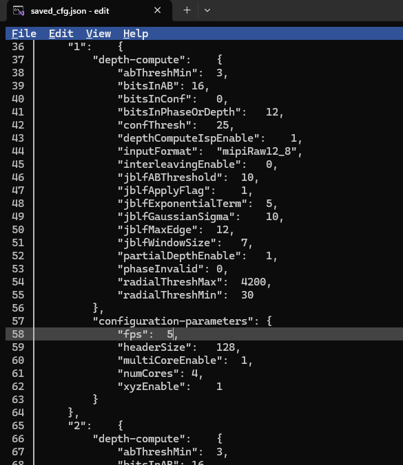
–f output : Place captured data into the folder output .–m 1 : Use mode 1.–n 100 : Capture 100 frames.–lcf saved_cfg.json : Used the device configuration file saved_cfg.json .
data_collect –f output –m 1 –n 100 –lcf saved_cfg.json
(aditofpython_env) analog@analog-desktop:~/ADI/Robotics/Camera/ADCAM/0.2.0-a.1/eval/C++/data_collect$ ./data_collect --f output --m 1 --n 100 --lcf saved_cfg.json
I20260225 12:24:14.976205 261852 main.cpp:192] ADCAM version: 0.2.0 | SDK version: 7.0.0 a-1 | branch: main | commit: 91b46285
I20260225 12:24:14.976403 261852 main.cpp:260] Output folder: output
I20260225 12:24:14.976430 261852 main.cpp:261] Mode: 1
I20260225 12:24:14.976447 261852 main.cpp:262] Number of frames: 100
I20260225 12:24:14.976465 261852 main.cpp:263] Json file: saved_cfg.json
I20260225 12:24:14.976480 261852 main.cpp:264] Configuration is: standard
I20260225 12:24:14.976506 261852 platform_impl.cpp:53] Initializing platform: NVIDIA Jetson Orin Nano
I20260225 12:24:14.976531 261852 sensor_enumerator.cpp:51] Initialized platform: NVIDIA Jetson Orin Nano (aarch64)
I20260225 12:24:14.981081 261852 platform_impl.cpp:338] Found ADSD3500: video=/dev/video0 subdev=/dev/v4l-subdev1
I20260225 12:24:14.981143 261852 sensor_enumerator.cpp:88] Found 1 ToF sensor(s)
I20260225 12:24:14.981237 261852 platform_impl.cpp:53] Initializing platform: NVIDIA Jetson Orin Nano
I20260225 12:24:14.981302 261852 buffer_processor.cpp:110] BufferProcessor initialized
I20260225 12:24:14.981376 261852 sensor_enumerator.cpp:133] Created ADSD3500 sensor at /dev/video0
I20260225 12:24:14.981462 261852 camera_itof.cpp:115] Sensor name = adsd3500
I20260225 12:24:14.981492 261852 camera_itof.cpp:165] Initializing camera: Online
I20260225 12:24:14.981518 261852 adsd3500_sensor.cpp:336] Opening device
I20260225 12:24:14.981538 261852 adsd3500_sensor.cpp:354] Looking for the following cards:
I20260225 12:24:14.981553 261852 adsd3500_sensor.cpp:356] vi-output, adsd3500
I20260225 12:24:14.981573 261852 adsd3500_sensor.cpp:418] device: /dev/video0 subdevice: /dev/v4l-subdev1
I20260225 12:24:14.981637 261852 adsd3500_sensor.cpp:513] ADSD3500 initialization attempt 1 of 3
I20260225 12:24:14.981667 261852 platform_impl.cpp:550] Resetting sensor via GPIO
W20260225 12:24:14.985634 261852 adsd3500_sensor.cpp:189] xioctl failed: fd=5 request=0xc0205648 errno=5 (Input/output error) after 2 attempts
W20260225 12:24:14.985703 261852 adsd3500_sensor.cpp:1423] Could not set control: 0x9819d1 with command: 0x20. Reason: Input/output error(5)
E20260225 12:24:14.985736 261852 adsd3500_sensor.cpp:2672] Failed to read status register!
I20260225 12:24:15.087238 261852 platform_impl.cpp:648] Waiting for sensor to reset
I20260225 12:24:15.087307 261852 platform_impl.cpp:651] .
I20260225 12:24:16.087426 261852 platform_impl.cpp:651] .
I20260225 12:24:17.092718 261852 platform_impl.cpp:655] Waited: 2 seconds
I20260225 12:24:17.092926 261852 platform_impl.cpp:667] Sensor reset complete
I20260225 12:24:17.206421 261852 adsd3500_sensor.cpp:550] ADSD3500 is ready to communicate with after 1 attempt(s)
I20260225 12:24:17.209957 261852 adsd3500_sensor.cpp:2407] CCB master is supported. Reading mode details from nvm.
I20260225 12:24:17.228885 261852 camera_itof.cpp:263] Current adsd3500 firmware version is: 7.0.2.0
I20260225 12:24:17.228946 261852 camera_itof.cpp:265] Current adsd3500 firmware git hash is: d340af8bfad4f13980f4d9a9e166ee20f2358fd5
W20260225 12:24:17.229745 261852 camera_itof.cpp:286] fsyncMode is not being set by SDK.
I20260225 12:24:17.230011 261852 camera_itof.cpp:324] MIPI output speed set to 1
I20260225 12:24:17.230247 261852 camera_itof.cpp:334] Deskew enabled at stream on
W20260225 12:24:17.230285 261852 camera_itof.cpp:345] enableTempCompenstation is not being set by SDK.
W20260225 12:24:17.230314 261852 camera_itof.cpp:355] enableEdgeConfidence is not being set by SDK.
I20260225 12:24:17.236574 261852 camera_itof.cpp:361] Module serial number: 026AM313018F0N6JAL
I20260225 12:24:17.236615 261852 camera_itof.cpp:369] Camera initialized
I20260225 12:24:17.236645 261852 adsd3500_sensor.cpp:2742] Using sensor configuration: standard
I20260225 12:24:17.236670 261852 main.cpp:305] Configure camera with standard
I20260225 12:24:17.236889 261852 adsd3500_sensor.cpp:336] Opening device
I20260225 12:24:17.236936 261852 adsd3500_sensor.cpp:354] Looking for the following cards:
I20260225 12:24:17.236961 261852 adsd3500_sensor.cpp:356] vi-output, adsd3500
I20260225 12:24:17.236985 261852 adsd3500_sensor.cpp:418] device: /dev/video0 subdevice: /dev/v4l-subdev1
I20260225 12:24:19.446745 261852 buffer_processor.cpp:260] setVideoProperties: Allocating 3 raw frame buffers, each of size 4195328 bytes (total: 12.0029 MB)
I20260225 12:24:19.447064 261852 buffer_processor.cpp:279] setVideoProperties: Allocating 3 ToFi buffers, each of size 4194304 bytes (total: 12 MB)
I20260225 12:24:19.649003 261852 camera_itof.cpp:3315] Camera FPS set from parameter list at: 5
W20260225 12:24:19.649066 261852 camera_itof.cpp:3848] vcselDelay was not found in parameter list, not setting.
W20260225 12:24:19.649547 261852 camera_itof.cpp:3911] enablePhaseInvalidation was not found in parameter list, not setting.
I20260225 12:24:19.649597 261852 camera_itof.cpp:638] Using the following configuration parameters for mode 1
I20260225 12:24:19.649611 261852 camera_itof.cpp:641] abThreshMin : 20
I20260225 12:24:19.649625 261852 camera_itof.cpp:641] bitsInAB : 16
I20260225 12:24:19.649635 261852 camera_itof.cpp:641] bitsInConf : 0
I20260225 12:24:19.649645 261852 camera_itof.cpp:641] bitsInPhaseOrDepth : 16
I20260225 12:24:19.649654 261852 camera_itof.cpp:641] confThresh : 25
I20260225 12:24:19.649665 261852 camera_itof.cpp:641] depthComputeIspEnable : 1
I20260225 12:24:19.649674 261852 camera_itof.cpp:641] fps : 5
I20260225 12:24:19.649684 261852 camera_itof.cpp:641] headerSize : 128
I20260225 12:24:19.649693 261852 camera_itof.cpp:641] inputFormat : mipiRaw12_8
I20260225 12:24:19.649703 261852 camera_itof.cpp:641] interleavingEnable : 0
I20260225 12:24:19.649712 261852 camera_itof.cpp:641] jblfABThreshold : 10
I20260225 12:24:19.649721 261852 camera_itof.cpp:641] jblfApplyFlag : 1
I20260225 12:24:19.649730 261852 camera_itof.cpp:641] jblfExponentialTerm : 5
I20260225 12:24:19.649739 261852 camera_itof.cpp:641] jblfGaussianSigma : 10
I20260225 12:24:19.649748 261852 camera_itof.cpp:641] jblfMaxEdge : 12
I20260225 12:24:19.649757 261852 camera_itof.cpp:641] jblfWindowSize : 5
I20260225 12:24:19.649767 261852 camera_itof.cpp:641] partialDepthEnable : 1
I20260225 12:24:19.649776 261852 camera_itof.cpp:641] phaseInvalid : 0
I20260225 12:24:19.649785 261852 camera_itof.cpp:641] radialThreshMax : 10000
I20260225 12:24:19.649794 261852 camera_itof.cpp:641] radialThreshMin : 100
I20260225 12:24:19.649803 261852 camera_itof.cpp:641] xyzEnable : 1
I20260225 12:24:19.649931 261852 camera_itof.cpp:651] Metadata in AB is enabled and it is stored in the first 128 bytes.
I20260225 12:24:20.356681 261852 camera_itof.cpp:749] Using closed source depth compute library.
I20260225 12:24:20.780382 261852 adsd3500_sensor.cpp:638] Starting device 0
I20260225 12:24:20.802780 261852 buffer_processor.cpp:1042] startThreads: Starting Threads..
I20260225 12:24:20.854401 261852 camera_itof.cpp:1251] Dropped first frame
I20260225 12:24:21.051756 261852 main.cpp:408] Starting capture of 100 frames.
I20260225 12:24:21.051870 261852 main.cpp:409] Expected capture time (ms): 20000
I20260225 12:24:21.051894 261852 main.cpp:410] Maximum allowed capture time (ms): 600000
I20260225 12:24:21.051909 261852 main.cpp:411] FPS: 5
I20260225 12:24:21.051923 261852 camera_itof.cpp:978] [RECORDING] Enable flags: depth=1 ab=1 conf=0 xyz=1
I20260225 12:24:21.051940 261852 camera_itof.cpp:981] [RECORDING] Original frameContent has 4 items
I20260225 12:24:21.051955 261852 camera_itof.cpp:989] [RECORDING] Adding to header: depth
I20260225 12:24:21.051966 261852 camera_itof.cpp:989] [RECORDING] Adding to header: ab
I20260225 12:24:21.051978 261852 camera_itof.cpp:989] [RECORDING] Adding to header: xyz
I20260225 12:24:21.051989 261852 camera_itof.cpp:989] [RECORDING] Adding to header: metadata
I20260225 12:24:21.052001 261852 camera_itof.cpp:994] [RECORDING] Total frame types in header: 4
I20260225 12:24:21.052013 261852 camera_itof.cpp:1015] [RECORDING] Building fDataDetails from frameContent...
I20260225 12:24:21.052025 261852 camera_itof.cpp:1026] [RECORDING] Skipping raw from fDataDetails (not supported)
I20260225 12:24:21.052037 261852 camera_itof.cpp:1031] [RECORDING] Adding to fDataDetails: depth
I20260225 12:24:21.052052 261852 camera_itof.cpp:1031] [RECORDING] Adding to fDataDetails: ab
I20260225 12:24:21.052064 261852 camera_itof.cpp:1031] [RECORDING] Adding to fDataDetails: xyz
I20260225 12:24:21.052076 261852 camera_itof.cpp:1031] [RECORDING] Adding to fDataDetails: metadata
I20260225 12:24:21.052088 261852 camera_itof.cpp:1071] [RECORDING] Final fDataDetails count: 4
I20260225 12:24:21.052100 261852 camera_itof.cpp:1073] [RECORDING] Writing header to file: output
I20260225 12:24:21.052113 261852 adsd3500_sensor.cpp:3082] startRecording: Start recording
I20260225 12:24:41.066781 261852 main.cpp:450] Capture complete. Frames captured: 100
I20260225 12:24:41.067030 261852 buffer_processor.cpp:1193] Recording stopped. Total frames saved: 100
I20260225 12:24:41.067081 261852 main.cpp:459] Measured FPS: 5.04668
I20260225 12:24:43.444225 261852 buffer_processor.cpp:1112] stopThreads: Threads stopped successfully. Queue sizes - v4l2_input: 3, capture_to_process: 0, tofi_io: 3, process_done: 0
I20260225 12:24:43.444357 261852 adsd3500_sensor.cpp:691] Stopping device
I20260225 12:24:43.450812 261852 adsd3500_sensor.cpp:1917] Waiting for interrupt.
I20260225 12:24:43.450911 261852 adsd3500_sensor.cpp:1922] .
I20260225 12:24:43.473676 261852 adsd3500_sensor.cpp:1927] Waited: 20 ms.
I20260225 12:24:43.473755 261852 adsd3500_sensor.cpp:1934] Got the Interrupt from ADSD3500
I20260225 12:24:43.479294 261852 buffer_processor.cpp:133] freeComputeLibraryNotice, line (Measured FPS: 5.04668 ), the frame rate is 5fps.
ADIToFGUI (C++)
ADIToFGUI (C++)
$ ADIToFGUISelection Wizard
Live Camera
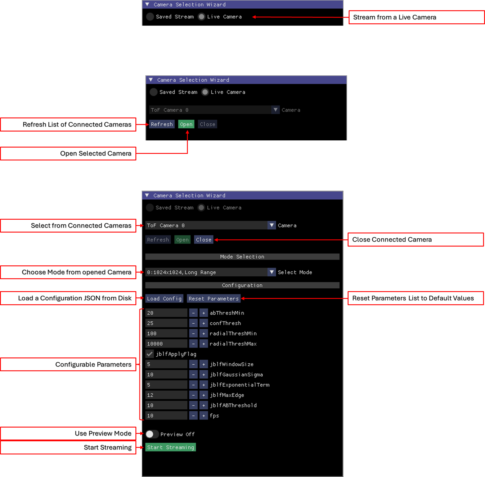
This option is used to stream frames from a live ADCAM Time of Flight camera.
Select Live Camera . Please note, this is only possible if the Saved Stream or Live Camera is closed.
Select Open .
Select the mode from the dropdown list, where each mode is unique option of size, range and binning. If no mode is chosen, the mode shown is used.
(Optional) Configure the device, where the parameters can be loaded from a JSON configuration file via Load Config or modified via the Configurable Parameters controls.
Start Streaming , where Preview mode allows a reduced frame rate - this is good for streaming and saving, a recording, at a desired frame without displaying every frame.
Saved Stream
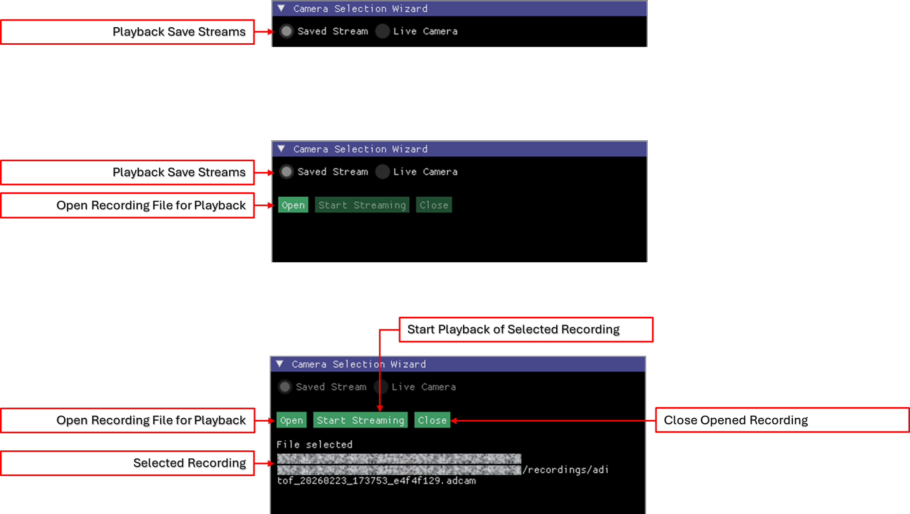
This option is used to stream save recordings.
Select Saved Stream . Please note, this is only possible if the Saved Stream or Live Camera is closed.
Select Open , with the file chooser, select the appropriate .adcam file.
Select Start Stream .
Data View
The Live Camera and Saved Stream views each contains several windows. The windows are the same between the views, where the Control Window controls differ slightly between the two views. In the two sub-sections below we will cover the differences.
Expand the images below to see the data views of the Live Camera and Saved Stream .
Live Camera: 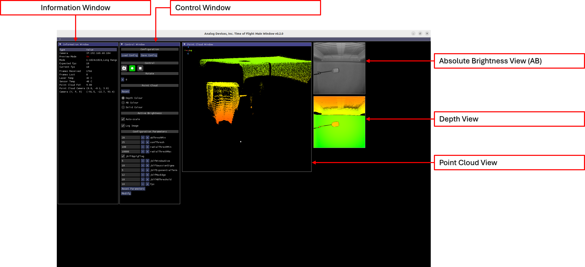
Save Stream: 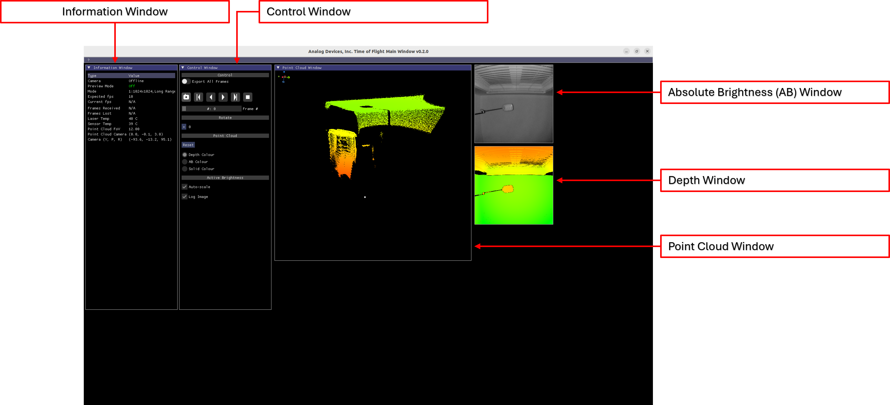
Information Window
This window shows metrics, telemetry and parameters.
Control Windows
This window allows the user to configure and control the stream. This is the only window that differs between the two views.
Absolute Brightness Window
This window show AB frames. In real time in the Live view and non-realtime in the Saved view.
Depth Window
This window shows Depth frames. In real time in the Live view and non-realtime in the Saved view.
Point Cloud Window
This window shows point cloud frames. In real time in the Live view and non-realtime in the Saved view.
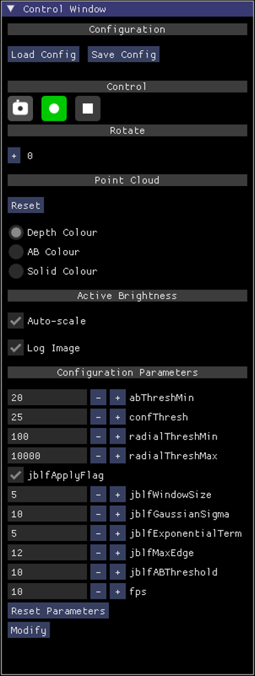
Camera
This defines is your are using an online (aka Live Camera) or offline (aka Saved Stream) camera.
Preview Mode
Shows if Preview Mode is on or off.
Mode
The current mode as selected by the user for the Live Camera view or as saved in the recording for the Saved Stream view.
Expected fps
The set and expected frame rate.
Current fps
The actual frame rate as calculated in real-time.
Frames Recevied
Frames received in a session, so far, in real-time.
Frames Lost
Frames lost in a session, so far, in real-time.
Laser Temp
The current laser temperature as sent via metadata from the imager module.
Sensor Temp
The current laser temperature as sent via metadata from the imager module.
Point Cloud FoV
The field of view in the point cloud window.
Point Cloud Camera
The location of the camera in the point cloud window.
Camera (Y, P, R)
The Yaw, Pitch and Rotation of the scene in the point cloud window.
Control Window: Live Camera View
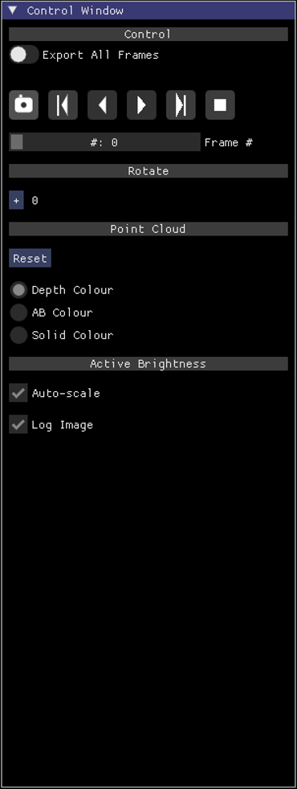
Configuration->Load Config
Allows the user to load a configuration JSON file. Device and software parameters are loaded and applied.
Configuration->Save Config
Allows the user to save a configuration JSON file. Device and software parameters are stored.
Control->Camera Icon
Save a snapshot of the current frame set. This is covered in more detail later.
Control->Record Icon
Start recording the stream. When the icon is blinking the system is recording.
Control->Stop Icon
Stop the active stream, returning to the Selection Wizard .
Rotate->+
This control rotates the image by 90 degress in the depth and AB windows. The current rotation is shown.
Point Cloud->Reset
If the user rotates or translates the point cloud Reset goes back to the default translation and rotation values.
Point Cloud->Colour Option
Depth Colour, AB Colour and Solid Color for the point cloud window.
Active Brigthtnes->Auto-scale
Improves AB image to make it less dark.
Active Brigthtness->Log Image
Improves AB image to make it less dark, but depends on Auto-scale being
Configuration Parameters->Reset Parameters
Reset the parameters shown to the defaults. This does not write back to the Time of Flight hardawre.
Configuration Parameters->Modify Parameters
Write the configuration parameters to the Time of Flight hardware.
Control Window: Saved Stream View
Control->Export All Frames
Export all frames in the record to png, text and ply files when the Camera icon is pressed.
Control->Camera Icon
Save a snapshot of the current frame set; if Export All Fames is selected then all frames are saved. This is covered in more detail later.
Control-> ‘|<’ Icon
Goto the first frame in the recording.
Control-> ‘<’ Icon
Step back one frame in the recording.
Control-> ‘>|’ Icon
Goto the last frame in the recording.
Control-> ‘>’ Icon
Step forward one frame in the recording.
Control->Stop Icon
Stop and return to the Selection Wizard .
Rotate->+
This control rotates the image by 90 degress in the depth and AB windows. The current rotation is shown.
Point Cloud->Reset
If the user rotates or translates the point cloud Reset goes back to the default translation and rotation values.
Point Cloud->Colour Option
Depth Colour, AB Colour and Solid Color for the point cloud window.
Active Brigthtness->Auto-scale
Improves AB image to make it less dark.
|Active Brigthtness->Log Image
Improves AB image to make it less dark, but depends on Auto-scale being
ADIToFGUI and Configuration Parameters
This section covers modification of ToF parameters per mode. To accomplish this the user needs to:
Save the configuration file, via Control Window->Configuration->Save Config .
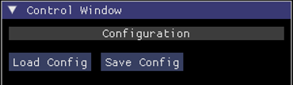
Modify the saved configuration file outside of ADIToFGUI using a text editor.
Load the configuration file, via Control Window->Configuration->Load Config .
Observing the result.
From the screen capture below you can see the frame rate for mode 1 is now 5fps.
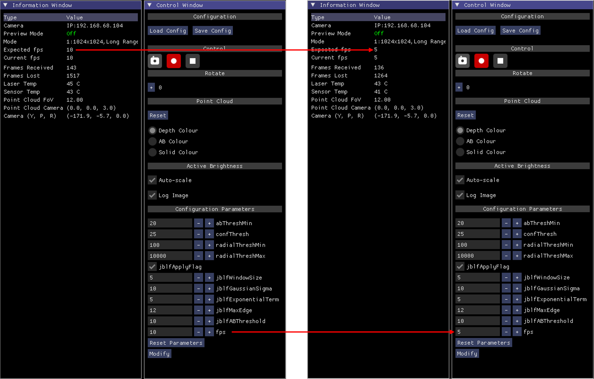
Point Cloud, AB and Depth Windows
Point Cloud Controls
While hovering over the point cloud window with the mouse pointer, the point cloud translation and rotation can be control by the user.
Translation is possible in the X, Y and Z planes.
Yaw, pitch and roll rotations are possible.
Left Mouse Button + Mouse
Right Mouse Button + Mouse Up/Down
Right Mouse Button + Mouse Left/Right
Mouse Wheel
CTRL + Mouse Wheel
ALT + Mouse Wheel
CTRL + ALT + Mouse Wheel
AB Window
Hovering the mouse pointer over the AB image shows the AB intensity for a given pixel.
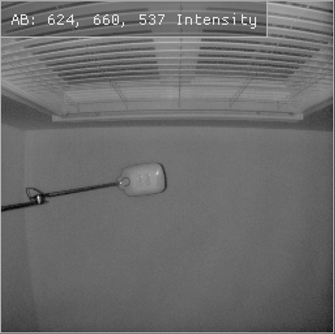
Depth Window
Hovering the mouse pointer over the depth image shows the depth/distance for a given pixel.
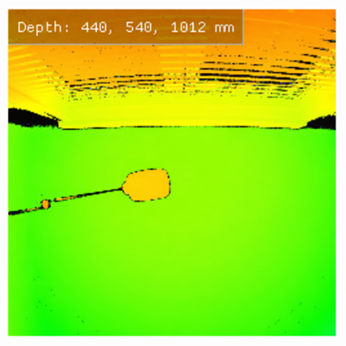
It is also possible to mointor the depth across a given line drawn on the depth image by the user.
To do so, right click in the depth window, once the red line appears move the mouse to the next point and press the right mouse button again. A graph will appear with the length of the line (in pixels) on the x-axis and depth (in mm) on the y-axis. Press the right mouse button in the depth window to remove the line.
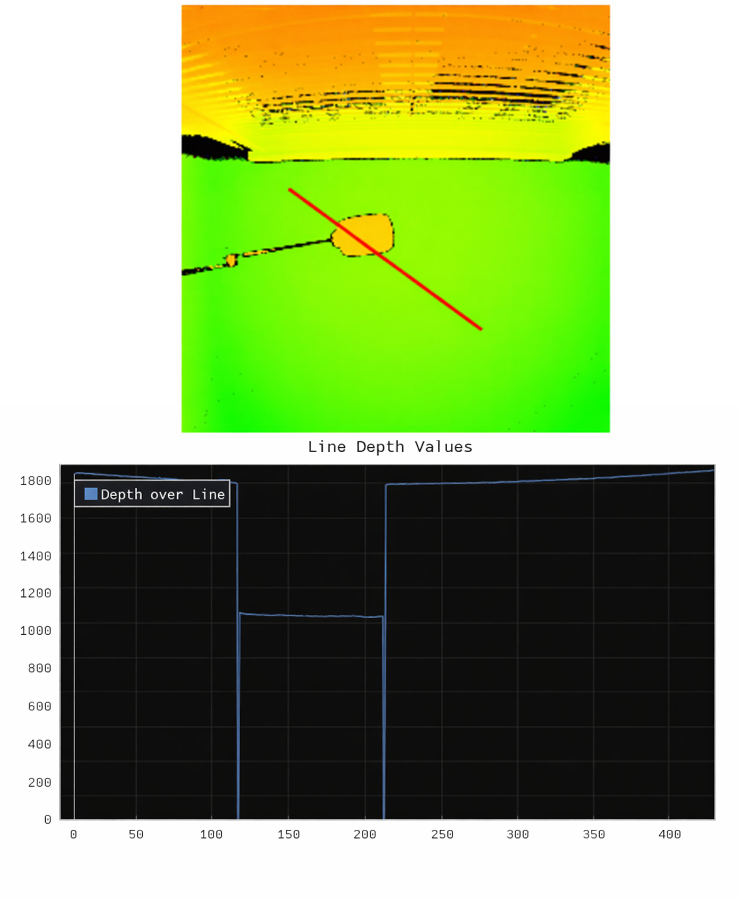
Configuring ADIToFGUI
In the ADIToFGUI folder there is a file: *tof-tools.config. This tool contains some GUI configuration parameters. The default contents of the file is shown below.
{
"skip_network_cameras": "off",
"camera_ip": "",
"tooltip_delay_seconds": 1.5,
"recordings_folder": "."
}Let’s take a look at each definition:
skip_network_cameras
Look for networked ADI ToF Cameras if set to ‘on’.
camera_ip
IP address of network worked camera, used if ‘skip_network_cameras’ is set to ‘on’.
tooltip_delay_seconds
How long to wait before the GUI displays tooltips on hover. By default it is set to 1.5s.
recordings_folder
The folder to save recordings to. By default it is the current folder - ‘recordings’ will be created.
Appendix
Extracting Data from Saved Streams: rawparser.py
rawparser.py is used to extract frames from data streams collected by data_collect. It can also be used to do the same for data streams recorded by ADIToFGUI. As with the Pyton bindings, Python 3.10 is required.
Static Badge
The Python environment must be active, see the section Python Tools .
Command Line Interface
python rawparser.py -h
usage: rawparser.py [-h] [-o OUTDIR] [-n] [-f FRAMES] filename
Script to parse a raw file and extract different frame data
positional arguments:
filename bin filename to parse
options:
-h, --help show this help message and exit
-o OUTDIR, --outdir OUTDIR
Output directory (optional)
-n, --no_xyz Input file doesn't have XYZ data
-f FRAMES, --frames FRAMES
Frame range: N (just N), N- (from N to end), N-M (N to M inclusive)Example Usage
The following example extracts frames 10 thru 10 from the capture file *output_11_04_10_53_14_0.bin* and places the contents in the folder *output_10_16*.
python rawparser/rawparser.py output/recordings/aditof_20260225_172421_df2852a8.adcam -f 10-16
(aditofpython_env) ~/ADI/Robotics/Camera/ADCAM/0.2.0-a.1/eval/C++/data_collect$ python rawparser/rawparser.py output/recordings/aditof_20260225_172421_df2852a8.adcam -f 10-16
rawparser 2.0.0
filename: output/recordings/aditof_20260225_172421_df2852a8.adcam
SDK version: 7.0.0 a-1 | branch: main | commit: 91b46285
I20260225 13:05:05.354537 263648 system_impl.cpp:143] Creating offline sensor.
I20260225 13:05:05.354705 263648 camera_itof.cpp:115] Sensor name = offline
system.getCameraList() Status.Ok
I20260225 13:05:05.354803 263648 camera_itof.cpp:161] Initializing camera: Offline
I20260225 13:05:05.355107 263648 offline_depth_sensor.cpp:808] Building Index
I20260225 13:05:05.355724 263648 camera_itof.cpp:513] Number of Frames: 100
I20260225 13:05:05.355745 263648 camera_itof.cpp:515] Frame Rate: 5
I20260225 13:05:05.355758 263648 camera_itof.cpp:536] [PLAYBACK] Reading frameContent from file header...
I20260225 13:05:05.355771 263648 camera_itof.cpp:542] [PLAYBACK] Found in header: depth
I20260225 13:05:05.355784 263648 camera_itof.cpp:542] [PLAYBACK] Found in header: ab
I20260225 13:05:05.355795 263648 camera_itof.cpp:542] [PLAYBACK] Found in header: xyz
I20260225 13:05:05.355807 263648 camera_itof.cpp:542] [PLAYBACK] Found in header: metadata
I20260225 13:05:05.355818 263648 camera_itof.cpp:546] [PLAYBACK] Total frame types loaded: 4
I20260225 13:05:05.355830 263648 camera_itof.cpp:558] [PLAYBACK] Loading 4 fDataDetails entries...
I20260225 13:05:05.355841 263648 camera_itof.cpp:565] [PLAYBACK] fDataDetails[0]: type=depth
I20260225 13:05:05.355854 263648 camera_itof.cpp:565] [PLAYBACK] fDataDetails[1]: type=ab
I20260225 13:05:05.355865 263648 camera_itof.cpp:565] [PLAYBACK] fDataDetails[2]: type=xyz
I20260225 13:05:05.355876 263648 camera_itof.cpp:565] [PLAYBACK] fDataDetails[3]: type=metadata
I20260225 13:05:05.781687 263648 camera_itof.cpp:1932] [PLAYBACK] Setting enable flags based on frameContent...
I20260225 13:05:05.781804 263648 camera_itof.cpp:1949] [PLAYBACK] Enable flags set: depth=1 ab=1 conf=0 xyz=1
Processing Frame: 16
Processed frames.
(aditofpython_env) ~/ADI/Robotics/Camera/ADCAM/0.2.0-a.1/eval/C++/data_collect$ ls output/recordings/aditof_20260225_172421_df2852a8/
aditof_20260225_172421_df2852a8_10 aditof_20260225_172421_df2852a8_12 aditof_20260225_172421_df2852a8_14 aditof_20260225_172421_df2852a8_16
aditof_20260225_172421_df2852a8_11 aditof_20260225_172421_df2852a8_13 aditof_20260225_172421_df2852a8_15
(aditofpython_env) ~/ADI/Robotics/Camera/ADCAM/0.2.0-a.1/eval/C++/data_collect$ ll output/recordings/aditof_20260225_172421_df2852a8/aditof_20260225_172421_df2852a8_10
total 25112
drwxrwxr-x 2 analog analog 4096 Feb 25 13:05 ./
drwxrwxr-x 9 analog analog 4096 Feb 25 13:05 ../
-rw-rw-r-- 1 analog analog 426544 Feb 25 13:05 ab_aditof_20260225_172421_df2852a8_000010.png
-rw-rw-r-- 1 analog analog 98950 Feb 25 13:05 depth_aditof_20260225_172421_df2852a8_000010.png
-rw-rw-r-- 1 analog analog 308 Feb 25 13:05 metadata_aditof_20260225_172421_df2852a8_000010.txt
-rw-rw-r-- 1 analog analog 25165974 Feb 25 13:05 pointcloud_aditof_20260225_172421_df2852a8_000010.ply
ab_aditof_20260225_172421_df2852a8_000010.png : PNG of the AB frame for frame #10.depth_aditof_20260225_172421_df2852a8_000010.png : PNG of the depth frame for frame #10.metadata_aditof_20260225_172421_df2852a8_000010.txt : Text file of metadata for frame #10.pointcloud_aditof_20260225_172421_df2852a8_000010.ply : Point cloud file, in ply format, for frame #10.
(aditofpython_env) ~/ADI/Robotics/Camera/ADCAM/0.2.0-a.1/eval/C++/data_collect$ python rawparser/rawparser_visualize.py --view png output/recordings/aditof_20260225_172421_df2852a8/aditof_20260225_172421_df2852a8_10/
============================================================
PNG and PLY File Visualizer
============================================================
Scanning directory: output/recordings/aditof_20260225_172421_df2852a8/aditof_20260225_172421_df2852a8_10/
Looking for first file of each type...
✓ Found metadata: metadata_aditof_20260225_172421_df2852a8_000010.txt
✓ Found AB image: ab_aditof_20260225_172421_df2852a8_000010.png
✗ No conf*.png files found
✓ Found depth image: depth_aditof_20260225_172421_df2852a8_000010.png
✓ Found point cloud: pointcloud_aditof_20260225_172421_df2852a8_000010.ply
Displaying 4 file(s)...
============================================================
File 1/2: AB
============================================================
Loaded: 1024x1024, 3 channel(s)
============================================================
File 2/2: DEPTH
============================================================
Loaded: 1024x1024, 3 channel(s)
============================================================
Creating combined display...
============================================================
Displaying combined image (2048x1064)
Press any key in the window to continue (or Ctrl+C to exit)...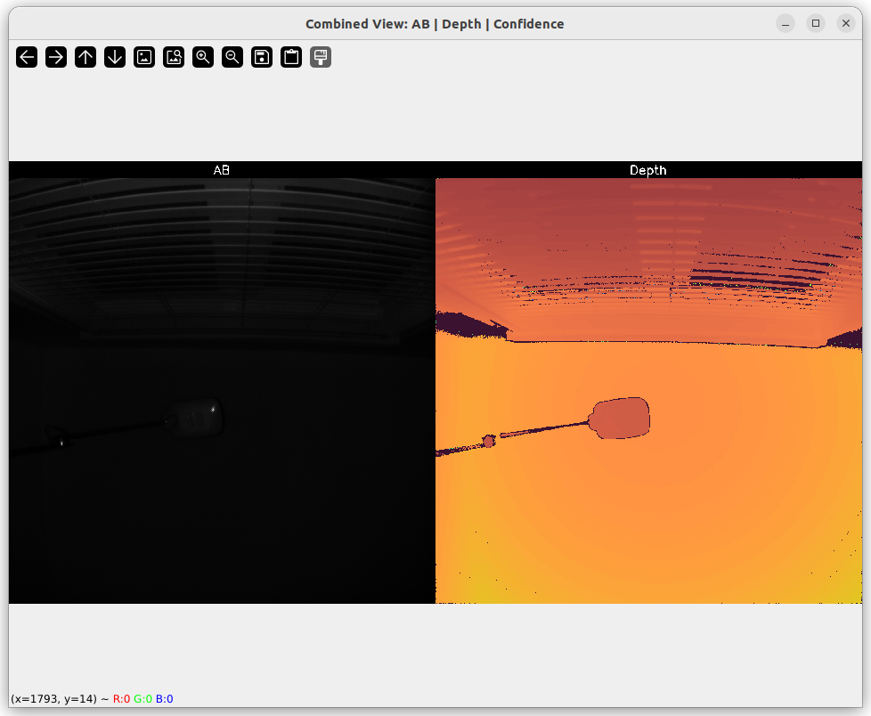
(aditofpython_env) ~/ADI/Robotics/Camera/ADCAM/0.2.0-a.1/eval/C++/data_collect$ python rawparser/rawparser_visualize.py --view metadata output/recordings/aditof_20260225_172421_df2852a8/aditof_20260225_172421_df2852a8_10/
============================================================
PNG and PLY File Visualizer
============================================================
Scanning directory: output/recordings/aditof_20260225_172421_df2852a8/aditof_20260225_172421_df2852a8_10/
Looking for first file of each type...
✓ Found metadata: metadata_aditof_20260225_172421_df2852a8_000010.txt
✓ Found AB image: ab_aditof_20260225_172421_df2852a8_000010.png
✗ No conf*.png files found
✓ Found depth image: depth_aditof_20260225_172421_df2852a8_000010.png
✓ Found point cloud: pointcloud_aditof_20260225_172421_df2852a8_000010.ply
Displaying 4 file(s)...
============================================================
File 1/1: METADATA
============================================================
Reading metadata: output/recordings/aditof_20260225_172421_df2852a8/aditof_20260225_172421_df2852a8_10/metadata_aditof_20260225_172421_df2852a8_000010.txt
------------------------------------------------------------
Metadata for frame 000010:
frameWidth: 1024
frameHeight: 1024
outputconfig: 5
depthPhaseBits: 12
ABBits: 16
confidenceBits: 0
invalidPhaseValue: 20
frequencyIndex: 32
frameNumber: 12
imagerMode: 1
numberOfPhases: 3
numberOfFrequencies: 3
ElapsedTimeinFrac: 0
ElapsedTimeinSec: 0
sensorTemp: 38
laserTemp: 39
------------------------------------------------------------
============================================================
Visualization complete!
============================================================(aditofpython_env) ~/ADI/Robotics/Camera/ADCAM/0.2.0-a.1/eval/C++/data_collect$ python rawparser/rawparser_visualize.py --view pointcloud output/recordings/aditof_20260225_172421_df2852a8/aditof_20260225_172421_df2852a8_10/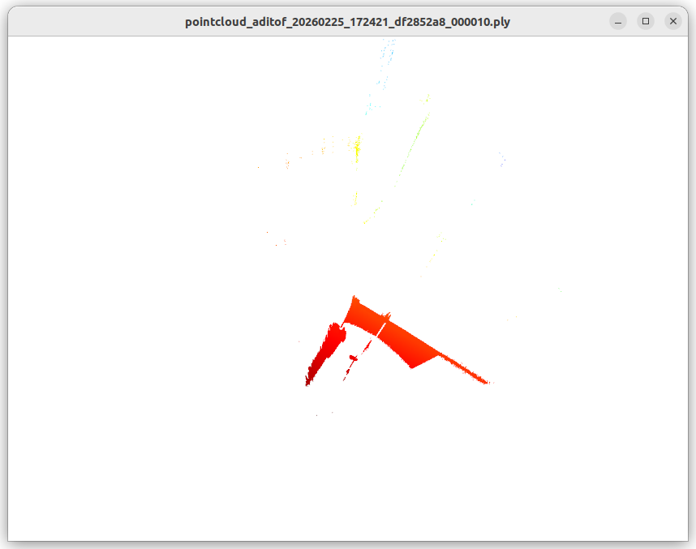
Configuration JSON File
Configuration JSON File
For the following discussion example-cfg.json will be referenced.
General Parameters
These should not be changed in the context of the eval kit unless explicitly asked to do so by ADI.
errata1 : DO NOT CHANGEfsyncMode : DO NOT AmipiOutputSpeed : DO NOT CHANGEisdeskewEnabled : DO NOT CHANGEenableTempCompensation : DO NOT CHANGEenableEdgeConfidence : DO NOT CHANGE
"errata1": 1,
"fsyncMode": -1,
"mipiOutputSpeed": 1,
"isdeskewEnabled": 1,
"enableTempCompensation": -1,
"enableEdgeConfidence": -1,Mode Parameters
Each supported mode has an entry in the saved file. For example Mode 0 is shown below.
This is further sub-divived into two groups:
depth-compute : These parameters are used to configure the depth compute parameters for the ADSD3500 and depth compute library. A document is avaialble to descript these parameters, please contact ADI at tof@analog.com. Please note, this document is only available under NDA.configuration-parameters :
fps : desired frame rate in frames per second.headerSize : DO NOT CHANGE.multiCoreEnable : Enable use of multiple CPU cores by the depth compute library on the eval kit.numCores : The number of CPU cores to use when multiCoreEnable is set to 1 .xyzEnable : DO NOT CHANGE.
"0":{
"depth-compute":{
"abThreshMin":20.0,
"bitsInAB":16.0,
"bitsInConf":0.0,
"bitsInPhaseOrDepth":16.0,
"confThresh":25.0,
"depthComputeIspEnable":1.0,
"inputFormat":"mipiRaw12_8",
"interleavingEnable":0.0,
"jblfABThreshold":10.0,
"jblfApplyFlag":1.0,
"jblfExponentialTerm":5.0,
"jblfGaussianSigma":10.0,
"jblfMaxEdge":12.0,
"jblfWindowSize":5.0,
"partialDepthEnable":1.0,
"phaseInvalid":0.0,
"radialThreshMax":10000.0,
"radialThreshMin":100.0
},
"configuration-parameters":{
"fps":10.0,
"headerSize":128.0,
"xyzEnable":1.0
}
},
{kind=link}
{kind=link}
{kind=link}
{kind=link}
{kind=link}
{kind=link}
{kind=link}
{kind=link}
{kind=link}
{kind=link}
{kind=link}
{kind=link}
{kind=link}
{kind=link}
{kind=link}
{kind=link}
{kind=link}
{kind=link}